1
Leda General Coding RulesIntroduction
This chapter presents detailed reference information about the rules contained in the Leda general coding guidelines policy for the Leda Checker tool. This policy specifies general-purpose rules and guidelines that cover many aspects of HDL coding.
Some of the error messages listed in this chapter correspond to the rules as they are delivered and configured by Synopsys. These messages do not apply if you change the configuration of the rules. This mainly applies to the rules for naming conventions, where the error messages, as set by Synopsys, contain the naming conventions themselves. You can change the error messages when configuring rules with the Rule Configuration Wizard.
Finite State Machine Recognition
Several of the rules in the Leda policy concern finite state machines. Leda can infer finite state machines (FSMs) from a design and apply rules to constrain the type of FSM accepted. Leda can identify FSMs that are developed using case statements to define the states and transitions. Leda does not recognize FSMs defined using if statements. Leda recognizes 1-process, 2-process, and 3-process FSMs as long as all processes are in the same block (architecture or module).
The rules are grouped into the following rulesets, each of which impose constraints on different aspects of the applicable language:
The rules prefixed by "B_" are verified at the block level, whereas the rules prefixed by "C_" are verified for the entire design.
Design Structure Ruleset
The following rules are from the design structure ruleset:
B_1000
Message: Module/unit without I/Os
Description This rule checks that a module or unit has at least one port (input, output or inout).Rationale: as the functionality of this module or unit cannot be used, all instances of this design will be removed during synthesis. Policy Leda Ruleset DESIGN_STRUCTURE Language VHDL/Verilog Type Block-level Severity Warning
Example
This is an example of invalid Verilog code:
module B_1000_BAD (); //FAIL : module without I/Os wire tmp; reg REG_TMP; endmoduleB_1001
Message: Reading from an output port
Description The Checker verifies that no output port is used as a driver.Rationale: when the value of an output is also used internally, it is recommended to add a buffer that isolates the internal loop from the outside. Policy Leda Ruleset DESIGN_STRUCTURE Language Verilog Type Block-level Severity Warning
Example
This is an example of invalid Verilog code, followed by a circuit diagram that illustrates the problem:
module B_1001_1 (A, B, CLK, A_REG, B_OUT); input A,B,CLK; output A_REG,B_OUT; reg A_REG; always @(posedge CLK) begin A_REG <= A; end assign B_OUT = B & A_REG; // Output port signal A_REG is read endmodule
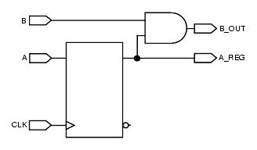
B_1002
Message: Port declaration is unused or partially unused
Description The Checker verifies that all ports are used at least one time. Usually, leaving ports unused indicates a design error. You should remove all unused ports (this can be accepted for some reuse or compatibility issues). Policy Leda Ruleset DESIGN_STRUCTURE Language VHDL Type Block-level Severity Warning
Example
This is an example of invalid VHDL code, followed by a circuit diagram that illustrates the problem:
library IEEE; use IEEE.std_logic_1164.all; entity B_1002_TEST is port ( CLK, RST, DATA_IN : in std_logic; UNUSED : in std_logic; -- UNUSED is an unconnected port DATA_OUT : out std_logic ); end; architecture RTL of B_1002_TEST is begin process (CLK,RST) begin if (RST = '0') then DATA_OUT <= '0'; elsif (CLK'event and CLK='1') then DATA_OUT <= DATA_IN; end if; end process; end;
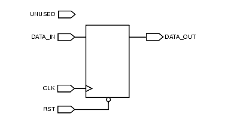
B_1005
Message: No bidirectional port allowed
Description The Checker detects all bidirectional port in all modules. Using bidirectional ports may results in shorts that are difficult to detect. It is best to use bidirectional ports only when needed. Policy Leda Ruleset DESIGN_STRUCTURE Language VHDL/Verilog Type Block-level Severity Error
Example
This is an example of invalid VHDL code, followed by a circuit diagram that illustrates the problem:
library IEEE; use IEEE.std_logic_1164.all; entity B_1005 is port ( CLK,R ST : in std_logic; DATA_IN : inout std_logic; -- DATA_IN is declared as -- inout DATA_OUT: out std_logic ); end; architecture RTL of B_1005 is begin process (CLK,RST) begin if (RST = '0') then DATA_OUT <= '0'; elsif (CLK'event and CLK='1') then DATA_OUT <= DATA_IN; end if; end process; end;
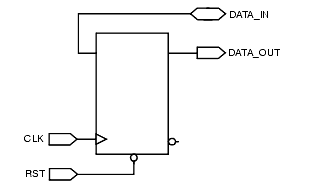
B_1006
Message: Tristate are only allowed in specified modules/units
Description The Checker detects all tristates declared out of the specified module/unit. To specify the module, use the Rule Configuration Wizard and supply the module/unit name in the value node of the rule.The default specified module/unit name is "^TOP".Grouping the tristate elements in a given unit eases the test tasks (no need to parse the whole design to detect these structures). Policy Leda Ruleset DESIGN_STRUCTURE Language VHDL/Verilog Type Block-level Severity Warning
Example
This is an example of invalid Verilog code, followed by a circuit diagram that illustrates the problem:
module B_1006_7 (CLK, DATA_IN, EN, DATA_OUT); input CLK, DATA_IN, EN; output DATA_OUT; reg tmp; always@(posedge CLK) begin tmp <= DATA_IN; end SUB U1 (.A(tmp),.B(DATA_OUT),.EN(EN)); endmodule module SUB (A, B, EN); input A, EN; output B; assign B = EN ? A : 1'bZ; // This tristate is not in the top-level // module endmodule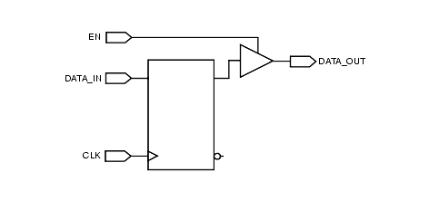
B_1007
Message: Tristate port detected
Description All tristate ports are reported. Because tristate ports require more attention during testing, reporting these ports eases the test activity. Policy Leda Ruleset DESIGN_STRUCTURE Language VHDL Type Block-level Severity Warning
Example
This is an example of invalid VHDL code, followed by a circuit diagram that illustrates the problem:
library IEEE; use IEEE.1164.all; Entity B_1007 is Port(EN, RST, CLK, DATA_IN : std_logic; DATA_OUT : out std_logic); End; architecture RTL of B_1007 is signal TMP : std_logic; begin process (EN,TMP) begin if(EN='1') then DATA_OUT <= TMP; else DATA_OUT <= 'Z'; -- tristate port (DATA_OUT) detected end if; end process; process (CLK,RST) begin if (RST = '0') then TMP <= '0'; elsif (CLK'event and CLK='1') then TMP <= DATA_IN; end if; end process; end;
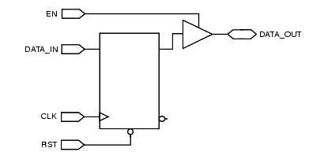
B_1008
Message: Tristate signal detected
Description All tristate signals are reported. Because tristate signals require more attention during testing, reporting these signals eases the test activity. Policy Leda Ruleset DESIGN_STRUCTURE Language VHDL Type Block-level Severity Warning
Example
This is an example of invalid VHDL code, followed by a circuit diagram that illustrates the problem:
library IEEE; use IEEE.std_logic_1164.all; entity B_1008 is port(DATA_IN, CLK, RST, EN : std_logic; DATA_OUT : out std_logic); End; architecture RTL of B_1008 is signal TMP : std_logic; begin process (EN, DATA_IN) begin if(EN='1') then TMP <= DATA_IN; else TMP <= 'Z'; -- Assigning TMP to 'Z' make TMP being a -- tristate signall end if; end process; process (CLK,RST) begin if (RST = '0') then DATA_OUT <= '0'; elsif (CLK'event and CLK='1') then DATA_OUT <= TMP; end if; end process; end;B_1009
Message: Tristate output detected
Description All tristate outputs are reported. Because tristate ports require more attention during testing, reporting these ports eases the test activity. Policy Leda Ruleset DESIGN_STRUCTURE Language VHDL Type Block-level Severity Warning
Example
This is an example of invalid VHDL code, followed by a circuit diagram that illustrates the problem:
library IEEE; use IEEE.std_logic_1164.all; entity B_1009 is port(DATA_IN, CLK, RST, EN : std_logic; DATA_OUT : out std_logic); End; architecture RTL of B_1009 is signal TMP : std_logic; begin process (EN, DATA_IN) begin if(EN='1') then DATA_OUT <= TMP; else DATA_OUT <= 'Z'; -- Assigning DATA_OUT to Z makes DATA_OUT be a -- tristate signal end if; end process; process (CLK, RST) begin if (RST = '0') then TMP <= '0'; elsif (CLK'event and CLK='1') then TMP <= DATA_IN; end if; end process; end;
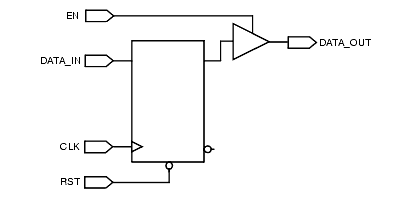
B_1010
Message: Feedthrough detected
Description The Checker reports feedthrough in all units. Feedthrough can cause trouble during back-end steps. Policy Leda Ruleset DESIGN_STRUCTURE Language VHDL/Verilog Type Block-level Severity Warning
Example
This is an example of invalid VHDL code, followed by a circuit diagram that illustrates the problem:
library IEEE; use IEEE.std_logic_1164.all; entity B_1010 is port(DATA_IN, RST, CLK, A_IN : std_logic; Q_OUT, DATA_OUT : out std_logic); End; architecture RTL of B_1010 is begin DATA_OUT <= DATA_IN; -- Feedthrough from DATA_IN to DATA_OUT process (CLK, RST) begin if (RST = '0') then -- PASS Q_OUT <= '0'; elsif (CLK'event and CLK='1') then Q_OUT <= A_IN; end if; end process; end;
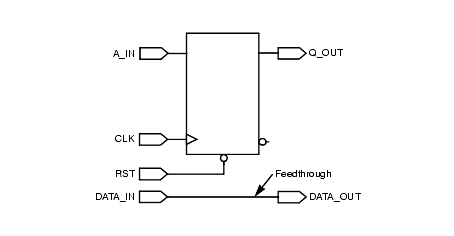
B_1011
Message: Module instantiation is not fully bounded
Description The Checker verifies that during an instantiation all of an instance's pins are connected. Leaving input pins unconnected is not recommended. Policy Leda Ruleset DESIGN_STRUCTURE Language Verilog Type Block-level Severity Warning
Example
This is an example of invalid Verilog code:
module B_1011_TOP (A, B, C); input A, B; output C; SUB_B_1011 U1 (.A(A), .C(C)); // Port B is not connected endmodule module SUB_B_1011 (A, B, C); input A, B; output [1:0] C; assign C = A + B; endmoduleB_1013
Message: Signal should not drive multiple ports
Description The Checker reports those signals that drive multiple ports. Policy Leda Ruleset DESIGN_STRUCTURE Language VHDL/Verilog Type Block-level Severity Warning
B_1014
Message: Parameter %s has been defined but is not used
Description Leda flags this rule when a parameter %s is defined but is not used. Policy Leda Ruleset DESIGN_STRUCTURE Language Verilog Type Block-level Severity Warning
B_1017
Message: DB cell should have named port association
Description Leda flags this rule if DB cells are not associated by ports. Policy Leda Ruleset DESIGN_STRUCTURE Language Verilog Type Block-level Severity Warning
C_1000
Message: Asynchronous feedback loop detected
Description The Checker reports asynchronous feedback loops in the design. This is a chip-level check. To check this rule on the entire design, a top design unit must be provided. Asynchronous feedback loops can create instability in design. Policy Leda Ruleset DESIGN_STRUCTURE Language VHDL/Verilog Type Chip-level Severity Error
Example
The following circuit diagram illustrates an asynchronous feedback loop in a design:
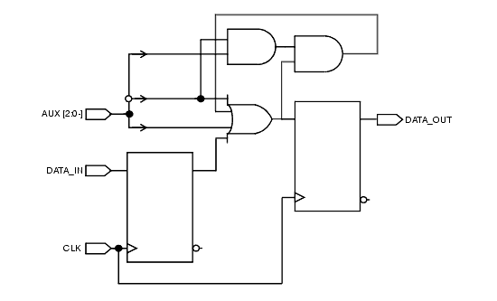
C_1001
Message: Flipflop with fixed value data input is detected
Description This rule detects if the input of a flip-flop is tied to a fixed value (ground or VCC).To check this rule on the entire design you must specify a top design unit using the -top switch. Policy Leda Ruleset DESIGN_STRUCTURE Language VHDL/Verilog Type Chip-level Severity Error
C_1002
Message: Latch with fixed value data input is detected
Description This rule detects if the input of a latch is tied to a fixed value (ground or VCC).To check this rule on the entire design you must specify a top design unit using the -top switch. Policy Leda Ruleset DESIGN_STRUCTURE Language VHDL/Verilog Type Chip-level Severity Error
C_1003
Message: Latch detected in design (inferred or instantiated)
Example
Description Latches are generally not recommended because they cause problems with scan insertion and timing analysis.At the block level, Leda only detects latches inferred in the RTL code. In other words, Leda infers a latch when a signal is not assigned on all possible flows of control. This rule works at the design (chip) level, and not only reports latches inferred at the block level, but also those instantiated in .db libraries (for example).The chip-level application of this rule only works if you specify the top level of the design using the -top switch. Policy Leda Ruleset DESIGN_STRUCTURE Language VHDL/Verilog Type Chip-level Severity Error
The following examples show poor and recommended coding styles if you need to use latches in your design
Poor coding style: latch inferred because of missing else condition:
EX21_PROC: process (a, b) begin if (a = '1') then q <= b; end if; end process EX21_PROC;Poor coding style: latch inferred because of missing z output assignment:
library IEEE; use IEEE.std_logic_1164.all; use IEEE.std_logic_arith.all; use IEEE.STD_LOGIC_UNSIGNED.conv_integer; entity c_1003 is port ( c : in std_logic; q , z : out std_logic ); end; architecture arch of c_1003 is begin EX22_PROC: process (c) begin case c is when '0' => q <= '1'; z <= '0'; when others => q <= '0'; end case; end process EX22_PROC; end architecture;Poor coding style: latches inferred because of missing s output assignments for the 2'b00 and 2'b01 conditions and a missing 2'b11 condition:
always @ (d) begin case (d) 2'b00: z <= 1'b1; 2'b01: z <= 1'b0; 2'b10: z <= 1'b1; s <= 1'b1; endcase endGuideline - You can avoid inferred latches by using any of the following coding techniques:
- Assign default values at the beginning of a process, as shown for VHDL in
Example A.- Assign outputs for all input conditions, as shown in Example B.
- Use else (instead of elsif) for the final priority branch, as shown in
Example C.Example A. Avoiding a latch by assigning default values.
COMBINATIONAL_PROC : process (state, bus_request) begin -- intitialize outputs to avoid latches bus_hold <= '0'; bus_interrupt <= '0' case (state) ... ................. ................. end process COMBINATIONAL_PROC;Example B. Avoiding a latch by fully assigning outputs for all input conditions.
Poor coding style:
EX25A_PROC: process (g, a, b) begin if (g = '1') then q <= 0; elsif (a = '1') then q <= b; end if; end process EX25A_PROC;Recommended coding style:
EX25B_PROC: process (g1, g2, a, b) begin q <= '0'; if (g1 = '1') then q <= a; elsif (g2 = '1') then q <= b; end if; end process EX25B_PROC;Example C. Avoiding a latch by using else for the final priority branch (VHDL).
Poor coding style:
MUX3_PROC: process (decode, A, B) begin if (decode = '0') then C <= A; elsif (decode = '1') then C <= B; end if; end process MUX3_PROC;Recommended coding style:
MUX3_PROC: process (decode, A, B) begin if (decode = '1') then C <= A; else C <= B; end if; end process MUX3_PROC;If you Must use a Latch
In some designs, using a latch is absolutely unavoidable. For example, in a PCI design, the team found that it was impossible to comply with the PCI specification for reset behavior without having a latch in the design. In order to achieve testability, the team used the approach shown in the following circuit diagram. They used a mux to provide either the normal function or the input from an I/O pad as data to the mux. The mux was selected by the test mode pin used to enable scan. The following circuit diagram shows how to make a latch testable:
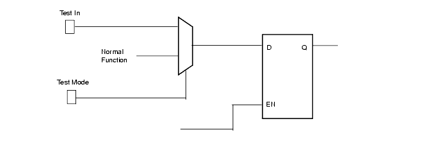
C_1004
Message: Glue logic at top level is detected
Example
Description A design hierarchy should contain gates only at leaf levels of the hierarchy tree. This rule only works if you specify the top level of the design using the -top switch. Policy Leda Ruleset DESIGN_STRUCTURE Language VHDL/Verilog Type Chip-level Severity Error
The following circuit diagram shows an invalid design where a NAND gate exists at the top level, between two lower-level design blocks. Optimization is limited because synthesis tools such as Design Compiler cannot merge the NAND with the combinational logic inside block C.
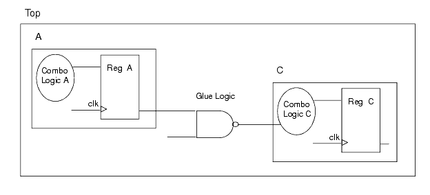
This next circuit diagram shows a valid similar design where the NAND gate is included as part of the combinational logic in block C. This approach eliminates the extra CPU cycles needed to compile small amounts of glue logic and provides for simpler synthesis script development. An automated script mechanism only needs to compile and characterize the leaf-level cells.

C_1005
Message: Top-level outputs are not registered: %s
Example
Description Register all top level outputs. Registering the top level output signals simplifies the synthesis process because it makes output drive strengths and input delay predictable. All the inputs arrive with the same relative delay. Output drive strength is equal to the drive strength of the average flipflop. Another technique is to register the top level input ports (see rule C_1006).This rule fires when some combinatorial logic (instead of a flipflop) drive a top level output or an top level input feeds directly to a top level output.This rule works only if you specify the top level of the design using the -top switch. Policy Leda Ruleset DESIGN_STRUCTURE Language VHDL/Verilog Type Chip-level Severity Error
The following valid example shows a hierarchical design in which all output signals from each block are registered; that is, there is no combinational logic between the registers and the output ports.
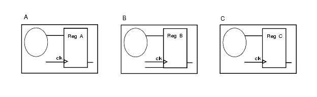
C_1006
Message: Top-level inputs are not registered
Example
Description Register all top level inputs. Registering the top level input signals simplifies the synthesis process because it makes input capacitance then input delay predictable. All the inputs arrive with the same relative delay. Another technique is to register the top level output ports (see rule C_1005).This rule fires when some combinatorial logic (instead of a flipflop) are tied to a top level input or an top level input feeds directly to a top level output.This rule works only if you specify the top level of the design using the -top switch. Policy Leda Ruleset DESIGN_STRUCTURE Language VHDL/Verilog Type Chip-level Severity Error
The following valid example shows a hierarchical design in which all input signals from each block are registered; that is, there is no combinational logic between the input ports and the registers.
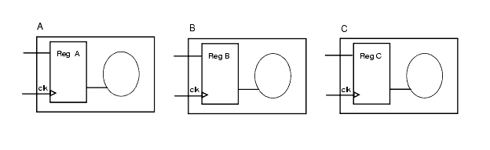
C_1007
Message: Pulse Generator Detected
Example
Description This rule detects signal reconvergence, which creates a pulse signal at the output of a gate. Policy Leda Ruleset DESIGN_STRUCTURE Language VHDL/Verilog Type Chip-level Severity Warning
The following circuit diagram illustrates the problem.
C_1008
Message: Multiple drivers to a signal detected
Description Each signal must have at most one driver. Signals with multiple drivers are often the result of a design error. If needed, these signals must be handled carefully with a tri-state buffer. To check this rule on the entire design, you must specify a top design unit using the -top switch. Policy Leda Ruleset DESIGN_STRUCTURE Language VHDL/Verilog Type Chip-level Severity Error
Example
This is an example of invalid VHDL code:
library IEEE; use IEEE.std_logic_1164.all; entity C_1008 is port(A, B, CLK, RST, DATA_IN : std_logic; DATA_OUT : out std_logic); end; architecture RTL of B_1003 is signal TMP : std_logic; -- TMP signal has multiple drivers begin TMP <= A and B; -- First driver for TMP process (CLK, RST) begin if (RST = '0') then -- PASS TMP <= '0'; elsif (CLK'event and CLK='1') then TMP <= DATA_IN; -- Second driver for TMP end if; end process; DATA_OUT <= TMP; end;C_1009
Message: Multiple non-tristate drivers to a signal detected
Description Each signal must have at most one driver. Signals with multiple non-tristate drivers are often the result of a design error. If needed, these signals must be handled carefully with a tristate buffer.To check this rule on the entire design. you must specify a top design unit using the -top switch. Policy Leda Ruleset DESIGN_STRUCTURE Language VHDL/Verilog Type Chip-level Severity Error
Example
This is an example of invalid VHDL code:
library IEEE; use IEEE.std_logic_1164.all; entity C_1009 is port(A, B, RST, CLK, DATA_IN : std_logic; DATA_OUT : out std_logic); end; architecture RTL of C_1009 is begin DATA_OUT <= A and B; -- First driver for DATA_OUT process (CLK, RST) begin if (RST = '0') then -- PASS DATA_OUT <= '0'; elsif (CLK'event and CLK='1') then DATA_OUT <= DATA_IN; -- Second driver for DATA_OUT end if; end process; end;Clocks Ruleset
The following rules are from the clocks ruleset:
B_1200
Message: Nested event control in a task
Description The Checker reports an error when event control (for example, @(posedge clk)) is nested. Nested events are not supported by synthesis tools. Policy Leda Ruleset CLOCKS Language Verilog Type Block-level Severity Warning
Example
This is an example of invalid Verilog code with nested event control:
task test; input A, B, CLK_1 ,CLK_2; output A_REG, B_REG; begin @(posedge CLK_1) begin A_REG <= A; @(negedge CLK_2) B_REG <= B; // FAIL : nested event in task end end endtaskB_1201
Message: Multiple event control statement in a task
Description This check controls the number of event controls in a task declaration. You can configure this rule with the Rule Configuration Wizard to accept more than one event per task. Policy Leda Ruleset CLOCKS Language Verilog Type Block-level Severity Warning
Example
This is an example of a Verilog code with more than one event control:
task test; input A, B, CLK_1, CLK_2; output A_REG, B_REG; begin @(posedge CLK_1) A_REG <= A; @(negedge CLK_2) // FAIL : Multiple event control in task B_REG <= B; end endtaskB_1202
Message: Multiple clocks in this unit detected
Description This check controls the number of clocks in a unit. You can configure this rule with the Rule Configuration Wizard to accept more than one clock per unit. Partitioning the design in clock domains eases the synthesis/timing analysis task. Policy Leda Ruleset CLOCKS Language VHDL/Verilog Type Block-level Severity Warning
B_1203
Message: Use rising edge clock in this unit
Description This rule checks that only rising edge flip-flop are used in the unit. You can configure this rule using the Rule Configuration Wizard in order to accept rising edge or falling edge. Using only one edge in the design eases the scan insertion process and gives more flexibility for scan chain definition. Policy Leda Ruleset CLOCKS Language VHDL/Verilog Type Block-level Severity Error
B_1204
Message: Multi-bit expression used as clock
Description This rule checks that a clock signal is not part of a bus. Using a 1-bit signal for a clock eases the clock management process all along the design flow. Policy Leda Ruleset CLOCKS Language VHDL Type Block-level Severity Warning
B_1205
Message: The clock signal is not coming directly from a port of the current unit
Description The Checker verifies that all clocks in a unit are declared as port signals and not internally generated either via combinatorial logic or sequential part. Internally generated clocks may not be controllable from the boundary of the chip. This reduces test coverage. Policy Leda Ruleset CLOCKS Language VHDL/Verilog Type Block-level Severity Warning
B_1206
Message: Do not use event definitions for clocks
Description This rule checks that event definitions are not used as clocks. Event declarations are not supported by synthesis tools. Policy Leda Ruleset CLOCKS Language Verilog Type Block-level Severity Warning
Example
This is an example of invalid Verilog code that uses an event to generate a clock:
... event my_event; ... always @(posedge my_event) q <= d; // Event used as a clock ...B_1220
Message: Clock in concurrent statement other than process may not be synthesizable
Description This rule checks for the presence of clock in concurrent statements other than process statements. Policy Leda Ruleset CLOCKS Language VHDL Type Block-level Severity Warning
Example
This is an example of a Verilog code with more than one event control:
library ieee; use ieee.std_logic_1164.all; entity DFF is -- Signals are initialized to 0 by default. -- To make QN a 1, it has to be initialized port ( D, CLK : in std_logic; Q : out std_logic; QN : out std_logic := '1'); end DFF; architecture data_flip of DFF is begin Q <= D when CLK'event and CLK = '1' -- FAIL: Clock in concurrent statement end data_flip;B_1221
Message: A clocking style is used which may not be synthesizable
Description This rule is flagged when Leda finds a clocking style that may not be synthesizable. Policy Leda Ruleset CLOCKS Language VHDL Type Block-level Severity Warning
Example
This is an example of a Verilog code with more than one event control:
library ieee; use ieee.std_logic_1164.all; entity DFF is -- Signals are initialized to 0 by default. -- To make QN a 1, it has to be initialized port ( D, CLK : in std_logic; Q : out std_logic; QN : out std_logic := '1'); end DFF; architecture data_flip of DFF is begin process ( CLK ) begin if (CLK'stable and CLK'event ) then -- FAIL: Cunsynthesizable clocking style Q <= D after 10ns; QN <= not D after 10ns; end if; end process; end data_flip;B_1222
Message: Multiple wait statement using the same clock expression
Description This rule is flagged when Leda finds multiple wait statements in which the same clock expression is used. Policy Leda Ruleset CLOCKS Language VHDL Type Block-level Severity Warning
Example
This is an example of a Verilog code with more than one event control:
library IEEE; use IEEE.std_logic_1164.all; entity dff is port ( clk: in bit; Q1,Q2,Q3 : inout bit) end dff; architecture dff_arch of dff is begin Output: process begin Q1 = not Q1; Wait until clk = '1'; Q2 = not Q2; Wait until clk = '1'; -- FAIL: Multiple wait exp. inside a process -- using same clock expression. Q3 = not Q3; end process output; end dff_arch;C_1200
Message: Only one clock allowed in the design
Description This rule ensures that only one clock is used in a design. You can configure this rule with the Rule Configuration Wizard to allow more than one clock.Note: as with all chip-level rules, this rule works only if you use the -top switch to specify the top level of your design. Policy Leda Ruleset CLOCKS Language VHDL/Verilog Type Chip-level Severity Error
C_1201
Message: Clocks must not be used as data
Description This rule verifies that no clocks are connected to the data inputs of a flip-flop. Controlling the clock trees eases the task of clock-tree synthesis.Note: as with all chip-level rules, this rule works only if you use the-top switch to specify the top level of your design. Policy Leda Ruleset CLOCKS Language VHDL/Verilog Type Chip-level Severity Error
C_1202
Message: Data must be registered by 2 flipflops when changing clock domain
Description When changing clock domains, use two flip-flop stages in the destination clock domain to avoid metastability problems.Note: as with all chip-level rules, this rule works only if you use the -top switch to specify the top level of your design. Policy Leda Ruleset CLOCKS Language VHDL/Verilog Type Chip-level Severity Error
C_1203
Message: Internally generated clock detected (chip level)
Description This rule verifies that all clocks are controllable from the top level of the design and not internally generated via a sequential block. Internally generated clocks may not be controllable from the boundary of the chip. This reduces test coverage.Note: as with all chip-level rules, this rule works only if you use the -top switch to specify top level of your design. Policy Leda Ruleset CLOCKS Language VHDL/Verilog Type Chip-level Severity Error
C_1204
Message: No gated clock except in clock generator CKGEN
Description This rule verifies that all clock-gating elements (for example, and/or/xor/inverter) are grouped in a unique design called CKGEN. Isolating the clock-gating logic eases the task of clock-tree synthesis. You can configure this rule using the Rule Configuration Wizard.Note: as with all chip-level rules, this rule works only if you use the -top switch to specify the top level of your design. Policy Leda Ruleset CLOCKS Language VHDL/Verilog Type Chip-level Severity Error
C_1205
Message: Use rising edge clock in the design
Description This rule ensures that all flip-flops in the design are driven by a rising edge. Mixing rising-edge and falling-edge flip-flops has impacts on scan chains. If necessary, you can configure this rule to check that all flip-flops are driven by a falling edge.Note: as with all chip-level rules, this rule works only if you use the -top switch to specify the top level of the design. Policy Leda Ruleset CLOCKS Language VHDL/Verilog Type Chip-level Severity Error
C_1206
Message: Buffers must not be explicitly added to clock path
Description This rule verifies that no buffers have been added on the clock path. Clock tree synthesis tools first remove buffers on the clock path before building the trees.Note: as with all chip-level rules, this rule works only if you use the -top switch to specify top level of your design. Policy Leda Ruleset CLOCKS Language VHDL/Verilog Type Chip-level Severity Error
C_1207
Message: Avoid gated clock in the design
Description This rule looks for all gated clocks in the design. This rule is similar to rule C_1204. Gated clocks require particular attention during timing analysis and extra work during clock-tree synthesis.Note: as with all chip-level rules, this rule works only if you use the -top switch to specify the top level of the design. Policy Leda Ruleset CLOCKS Language VHDL/Verilog Type Chip-level Severity Error
C_1208
Message: Multiplexed clock is detected
Description The Checker reports a clock signal that is multiplexed. See the following example and exceptions. Policy Leda Ruleset CLOCKS Language VHDL/Verilog Type Chip-level Severity Warning
Example
Following is an example of invalid Verilog code that exhibits this problem:
// C_1208: Avoid gated clock in the design module TEST_C_1208_2 (SEL, CLK0, CLK1, CLK2, CLK3, D, Q); input [0:1] SEL; input CLK0, CLK1, CLK2, CLK3; input D; output Q; reg Q; reg mux_clk; always @(SEL) begin case (SEL) 2'b00: mux_clk = CLK0; 2'b01: mux_clk = CLK1; 2'b11: mux_clk = CLK3; 2'b10: mux_clk = CLK2; // The Checker flags this line endcase end always@(posedge mux_clk) begin Q <= D; end endmoduleChecker Exceptions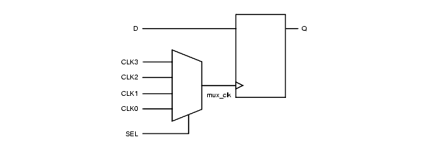
For the clock generator, if all inputs of a mux are connected to constant value, then the Checker does not consider the clock as multiplexed. In the following figure, Gen_clk is considered as an internally generated clock so it is not considered as a multiplexed clock
.
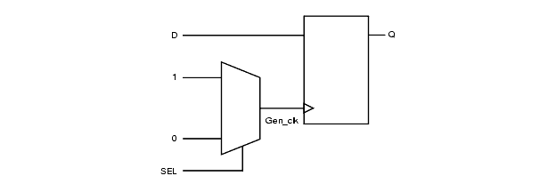
For a gated clock, if one of the inputs of a mux but not all is connected to a constant value, then the Checker does not consider the clock as multiplexed. In the following figure, CLK is considered as gated clock and not as a multiplexed clock
.
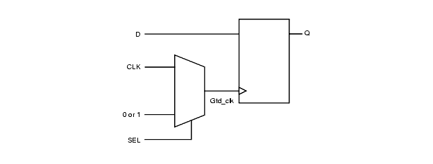
C_1209
Message: Register with fixed value clock is detected
Description This rule detects if the clock of a register is tied to a fixed value (ground or VCC).To check this rule on the entire design you must specify a top design unit using the -top switch. Policy Leda Ruleset CLOCKS Language VHDL/Verilog Type Chip-level Severity Error
Resets Ruleset
The following rules are from the resets ruleset:
B_1400
Message: Asynchronous reset/set/load signal <%item> is not a primary input to the current unit
Description This rule is similar to rule B_1205 except that it looks for an asynchronous resets, sets, or loads. The Checker verifies that all asynchronous resets, sets, and loads in a unit are declared as port signals. If not, it means that the reset, set, or load is generated inside the unit. Internally generated resets, sets, and loads may not be controllable from the boundary of the chip. This reduces test coverage. Policy Leda Ruleset RESETS Language VHDL/Verilog Type Block-level Severity Warning
Example
This is an example of invalid VHDL code, followed by a circuit diagram that illustrates the problem:
library IEEE; use IEEE.std_logic_1164.all; entity B_1400 is port(CLK, A_IN : std_logic; Q_OUT : out std_logic); End; architecture RTL of B_1400 is signal RST : std_logic; begin process (CLK) begin if (CLK'event and CLK='1') then RST <= not RST; end if; end process; process (CLK,RST) begin if (RST = '0') then -- Reset is generated internally (previous Q_OUT <= '0'; -- process) elsif (CLK'event and CLK='1') then Q_OUT <= A_IN; end if; end process; end;Invalid Example:
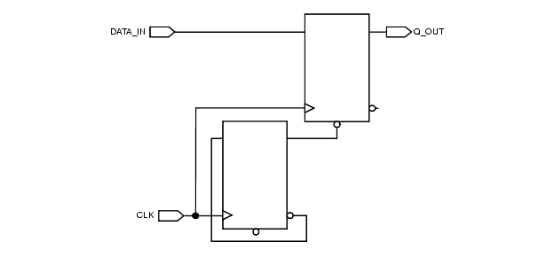
Valid Example:
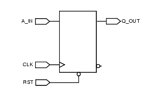
B_1401
Message: Synchronous reset/set/load signal <%item> is not a primary input to the current unit
Description This rule is similar to rule B_1205 except that it looks for a synchronous resets, sets, and loads. The Checker verifies that all synchronous resets, sets, and loads in a unit are declared as port signals. If not, it means that the reset, sets, or load is generated inside the unit. Internally generated resets, sets, and loads may not be controllable from the boundary of the chip. This reduces test coverage. Policy Leda Ruleset RESETS Language VHDL/Verilog Type Block-level Severity Warning
Example
This is an example of invalid VHDL code, followed by a circuit diagram that illustrates the problem:
library IEEE; use IEEE.std_logic_1164.all; entity B_1401 is port(CLK, A_IN : std_logic; Q_OUT : out std_logic); End; architecture RTL of B_1401 is signal RST : std_logic; begin process (CLK) begin if(CLK'event and CLK='1') then RST <= not RST; end if; end process; process (CLK,RST) begin if (CLK'event and CLK='1') then if (RST = '0') then -- Reset is internally generated Q_OUT <= '0'; -- (previous process) else Q_OUT <= A_IN; end if; end if; end process; end;Invalid Example:
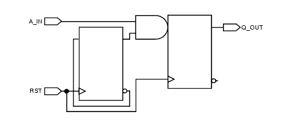
Valid Example:
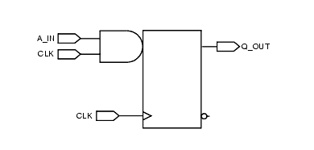
B_1402
Message: Do not use event definitions for asynchronous resets/sets/loads
Description Events are not supported by synthesis tools. Policy Leda Ruleset RESETS Language Verilog Type Block-level Severity Warning
Example
Following are examples of valid and invalid VHDL code that illustrate this problem and how to correct it:
Invalid Verilog Code:
module B_1402_bad (clk, data_in, data_out); input clk, data_in; output data_out; reg data_out; event rst; // FAIL always @(posedge clk or posedge rst) begin // Reset defintion done via if (rst == 1'b1) // an event data_out <= 1'b0; else data_out <= data_in; end endmoduleValid Verilog Code:
module B_1402_good (clk, data_in, rst, data_out); input clk, data_in; input rst; // PASS output data_out; reg data_out; always @(posedge clk or posedge rst) begin // Reset definition done via if (rst == 1'b1) // an input port data_out <= 1'b0; else data_out <= data_in; end endmoduleB_1403
Message: Flip-flop assigned but not initialized
Description The Checker searches for all flip-flops that have no reset. All sequential elements must have a reset for testability purposes.This rule only checks at the architecture/module level. There is a similar rule in the Leda general coding guidelines policy that you can use to check the entire design. Policy Leda Ruleset RESETS Language VHDL/Verilog Type Block-level Severity Warning
Example
Following are examples of valid and invalid VHDL code that illustrate this problem and how to correct it. The code samples are followed by circuit diagrams that also illustrate the problem and the solution.
Invalid VHDL Code:
library IEEE; use IEEE.std_logic_1164.all; entity b_1403 is port ( CLK, RST, DATA_IN : in std_logic; DATA_OUT : out std_logic ); end; architecture RTL of b_1403 is signal tmp : std_logic; begin process (CLK, RST) begin if (RST='0') then DATA_OUT <= '0'; elsif (CLK'event and CLK='1') then tmp <= DATA_IN; -- tmp is affected but not initialized DATA_OUT <= tmp; end if; end process; end;Invalid Example:

Valid VHDL Code:
library IEEE; use IEEE.std_logic_1164.all; entity b_1403 is port ( CLK, RST, DATA_IN : in std_logic; DATA_OUT : out std_logic ); end; architecture RTL of b_1403 is signal tmp :std_logic; begin process (CLK, RST) begin if (RST='0') then DATA_OUT <= '0'; tmp <= '0'; -- tmp initialization elsif (CLK'event and CLK='1') then tmp <= DATA_IN; DATA_OUT <= tmp; end if; end process; end;Valid Example:

B_1404
Message: Asynchronous reset/set/load <%item> exists in module/unit
Description The Checker reports all asynchronous resets, sets, and loads. Some standard cell libraries may have only flip-flops with synchronous resets, sets, and loads. Avoiding asynchronous resets, sets, and loads prevents you from adding circuitry that is not useful with the clock on the data line. Policy Leda Ruleset RESETS Language VHDL/Verilog Type Block-level Severity Warning
Example
Here is an example of the basic Verilog code for an asynchronous reset:
always@(posedge CLK or negedge RST) begin if (! RST) begin A_REG <= 1'b0; end else begin A_REG <= A; end endHere is an example of the basic Verilog code for a synchronous reset:
always@(posedge CLK) begin if (! RST) begin A_REG <= 1'b0; end else begin A_REG <= A; end endB_1405
Message: Multiple asynchronous resets in this unit detected
Description This rule controls the maximum number of asynchronous resets allowed in a unit. The default is 1. To change this parameter, use the Rule Configuration Wizard and supply the number in the value node of the rule. Policy Leda Ruleset RESETS Language VHDL/Verilog Type Block-level Severity Warning
Example
Following is an example of invalid Verilog code, followed by diagrams that illustrate valid and invalid circuits:
module B_1405_BAD (A, B, CLK, RST_1, RST_2, A_REG, B_REG); input A, B, CLK, RST_1, RST_2; output A_REG, B_REG; reg A_REG, B_REG; always@(posedge CLK or negedge RST_1) begin if ( !RST_1) // First asynchronous reset A_REG <= 1'b0; else A_REG <= A; end always@(posedge CLK or negedge RST_2) begin if ( !RST_2) // Second asynchronous reset in this unit B_REG <= 1'b0; else B_REG <= B; end endmoduleInvalid Example:
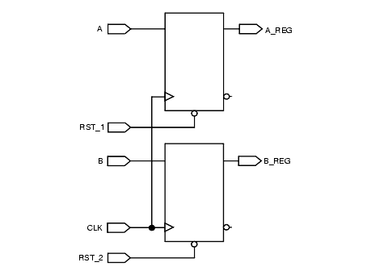
Valid Example:
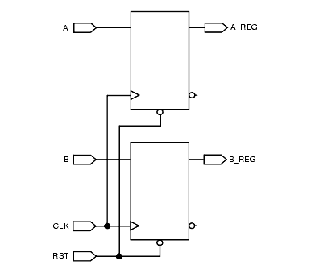
B_1406
Message: Multiple synchronous resets in this unit detected
Description This rule controls the maximum number of synchronous resets allowed in a unit. The default is 1. To change this parameter, use the Rule Configuration Wizard and supply the number in the value node of the rule. Policy Leda Ruleset RESETS Language VHDL/Verilog Type Block-level Severity Warning
Example
Following is an example of invalid Verilog code, followed by diagrams that illustrate valid and invalid circuits:
module b_1406(A, B, CLK, RST_1, RST_2, A_REG, B_REG); input A, B, CLK, RST_1, RST_2; output A_REG, B_REG; reg A_REG, B_REG; always@(posedge CLK) begin if(!RST_1) // First synchronous reset A_REG <= 1'b0; else A_REG <= A; end always@(posedge CLK) begin if(!RST_2) // Second synchronous reset in this unit B_REG <= 1'b0; else B_REG <= B; end endmoduleInvalid Example:
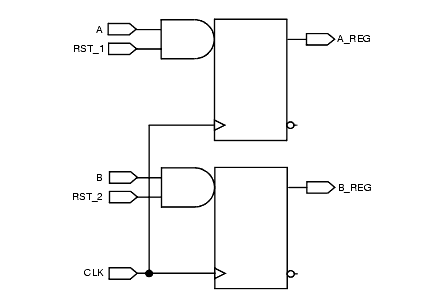
Valid Example:
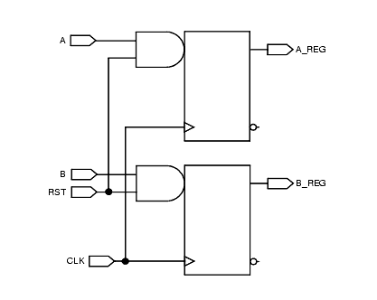
B_1407
Message: Do not use active high asynchronous reset/set/load
Description This rule controls the active level of all asynchronous resets, sets, and loads in all units. The default is active low. To change the active edge, use the Rule Wizard to select the active edge in the value node of the rule. Using active-high asynchronous resets, sets, and loads when the technology library only has active-low asynchronous resets, sets, and loads results in inverted circuitry on the reset, set, or load path. Policy Leda Ruleset RESETS Language VHDL/Verilog Type Block-level Severity Error
Example
The following example of valid Verilog code shows an active-high asynchronous reset:
module b_1407 (CLK, RST, A, A_REG); input CLK, RST, A; output A_REG; reg A_REG; always@(posedge CLK or posedge RST) begin if (RST) begin // Posedge asynchronous reset A_REG <= 1'b0; end else begin A_REG <= A; end end endmoduleB_1408
Message: Do not use active high synchronous reset/set/load
Description This rule controls the active level of all synchronous resets, sets, and loads in all units. The default is active low. To change the active edge, use the Rule Wizard and select the active edge in the value node of the rule. Using active-high synchronous resets, sets, and loads when the technology library has only active-low synchronous resets, sets, and loads results in inverted circuitry on the reset, set, or load path. Policy Leda Ruleset RESETS Language VHDL/Verilog Type Block-level Severity Error
Example
The following example of valid Verilog code shows an active-low synchronous reset:
module b_1408 (CLK, RST, A, A_REG); input CLK, RST, A; output A_REG; reg A_REG; always @(posedge CLK ) begin if (RST) begin // Posedge synchronous reset A_REG <= 1'b0; end else begin A_REG <= A; end end endmoduleB_1409
Message: Multiple asynchronous resets in always/process block
Description This rule controls the maximum number of asynchronous resets allowed in a process (VHDL) or always (Verilog). The default is 1. To change this parameter, use the Rule Configuration Wizard and supply the number in the value node of the rule. Policy Leda Ruleset RESETS Language VHDL/Verilog Type Block-level Severity Warning
Example
Following are examples of invalid Verilog and VHDL code, followed by a circuit diagram that illustrates an invalid example:
Invalid Verilog Code:
always @(posedge CLK or negedge RST or negedge SET) begin if(!RST) // First reset signal A_REG <= 1'b0; else if (!SET) // Second reset signal in same unit A_REG <= 1'b1; else A_REG <= A; EndInvalid VHDL Code:
process (CLK,RST,SET) begin if (RST = '0') then -- First reset signal A_REG <= '0'; elsif (SET = '0') then -- Second reset signal in this unit A_REG <= '1'; elsif (CLK'event and CLK='1') then A_REG <= A; end if; end process;Note in the following diagram of an invalid example, that the SET and RST signals are both considered to be resets:
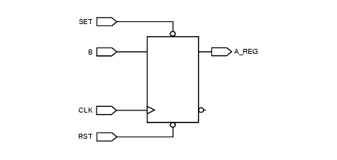
B_1410
Message: Multiple synchronous resets in always/process block
Description This rule controls the maximum number of synchronous resets allowed in a process (VHDL) or always (Verilog) block. The default is 1. To change this parameter, use the Rule Wizard and change the number in the value node of the rule. Policy Leda Ruleset RESETS Language VHDL/Verilog Type Block-level Severity Warning
Example
Following are examples of Verilog code, followed by a circuit diagram that illustrates an example:
Invalid Verilog Code:
module b_1410 ( CLK, RST, SET, A, A_REG ); input CLK, RST, SET, A; output A_REG; reg A_REG; always @(posedge CLK) begin if(!RST) // First reset signal A_REG <= 1'b0; else if (!SET) // Second reset signal in this unit A_REG <= 1'b1; else A_REG <= A; end endmoduleNote in the following diagram of an invalid example, that the SET and RST signals are both considered to be resets:
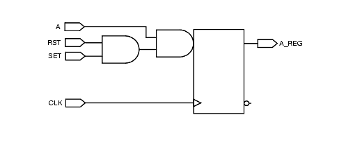
B_1411
Message: <%value> asynchronous sets in this unit detected
Description This rule controls the maximum number of asynchronous sets allowed in a unit. The default is 1. To change this parameter, use the Rule Wizard and change the number in the value node of the rule. Policy Leda Ruleset RESETS Language VHDL/Verilog Type Block-level Severity Warning
B_1412
Message: <%value> synchronous sets in this unit detected
Description This rule controls the maximum number of synchronous sets allowed in a unit. The default is 1. To change this parameter, use the Rule Wizard and change the number in the value node of the rule. Policy Leda Ruleset RESETS Language VHDL/Verilog Type Block-level Severity Warning
B_1413
Message: <%value> asynchronous sets in always/process block
Description This rule controls the maximum number of asynchronous sets allowed in a process (VHDL) or always block (Verilog). The default is 1. To change this parameter, use the Rule Wizard and change the number in the value node of the rule. Policy Leda Ruleset RESETS Language VHDL/Verilog Type Block-level Severity Warning
B_1414
Message: <%value> synchronous sets in always/process block
Description This rule controls the maximum number of synchronous sets allowed in a process (VHDL) or always block (Verilog). The default is 1. To change this parameter, use the Rule Wizard and change the number in the value node of the rule. Policy Leda Ruleset RESETS Language VHDL/Verilog Type Block-level Severity Warning
B_1415
Message: <%value> asynchronous loads in this unit detected
Description This rule controls the maximum number of asynchronous loads allowed in a unit. The default is 1. To change this parameter, use the Rule Wizard and change the number in the value node of the rule. Policy Leda Ruleset RESETS Language VHDL/Verilog Type Block-level Severity Warning
B_1416
Message: <%value> asynchronous loads in this unit detected
Description This rule controls the maximum number of synchronous loads allowed in a unit. The default is 1. To change this parameter, use the Rule Wizard and change the number in the value node of the rule. Policy Leda Ruleset RESETS Language VHDL/Verilog Type Block-level Severity Warning
B_1417
Message: <%value> asynchronous loads in always/process block
Description This rule controls the maximum number of asynchronous loads allowed in a process (VHDL) or always block (Verilog). The default is 1. To change this parameter, use the Rule Wizard and change the number in the value node of the rule. Policy Leda Ruleset RESETS Language VHDL/Verilog Type Block-level Severity Warning
B_1418
Message: <%value> synchronous loads in always/process block
Description This rule controls the maximum number of synchronous loads allowed in a process (VHDL) or always block (Verilog). The default is 1. To change this parameter, use the Rule Wizard and change the number in the value node of the rule. Policy Leda Ruleset RESETS Language VHDL/Verilog Type Block-level Severity Warning
C_1400
Message: Only 1 reset/set/load allowed in the design. <%value> have been detected
Description This rule controls the maximum number of resets, sets, and loads in the whole design. The default is 1. To change this parameter, use the Rule Wizard and change the number in the value node of the rule. To check this rule on the entire design, you must specify a top design unit. Policy Leda Ruleset RESETS Language VHDL/Verilog Type Chip-level Severity Error
Example
The following diagrams illustrate two invalid examples of using more than one reset in a design.
Invalid Example 1:
There are two asynchronous resets in this design (RST_1 & RST_2):
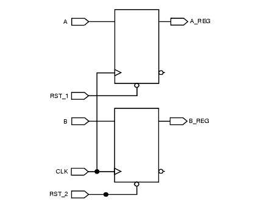
Invalid Example 2:
There are two reset signal in this design (one asynchronous and one synchronous):
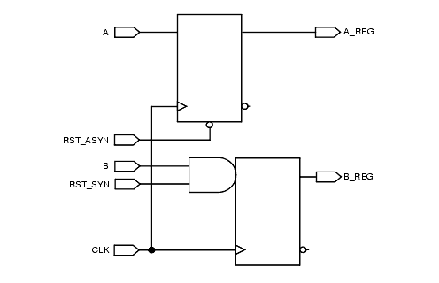
C_1401
Message: Avoid gated resets/sets/loads in design.
Description This rule looks for all gated resets, sets, and loads in the design. This rule is similar to rule C_1402. When both rules are activated, the Checker applies only rule C_1402 on the design. To check this rule on the entire design, you must specify a top design unit. Policy Leda Ruleset RESETS Language VHDL/Verilog Type Chip-level Severity Error
Example
The following diagram illustrates an invalid example of a gated asynchronous reset in the design:
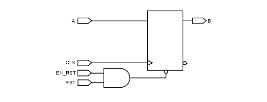
C_1402
Message: No gated reset/set/load except in reset/set/load generator RSTGEN
Description This rule looks for all gated resets, sets, and loads in the design unless the gated resets, sets, or loads occur in a specific unit named RSTGEN. To change this name, use the Rule Wizard and change the name in the value node of the rule. See also rule C_1401. To check this rule on the entire design, you must specify a top design unit. Policy Leda Ruleset RESETS Language VHDL/Verilog Type Chip-level Severity Error
Example
Following are two example diagrams, one valid and one invalid, that illustrate the circuits for correct and incorrect designs.
Invalid Example:
There is a gated asynchronous reset in this design, but the gated reset is not generated in a module called RSTGEN:
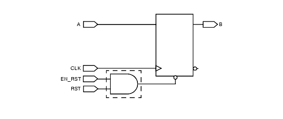
Valid Example:
There is a gated asynchronous reset in this design, and the gated reset is generated in a module called RSTGEN:
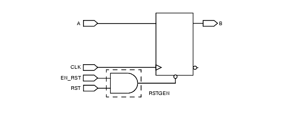
C_1403
Message: Buffers must not be explicitly added to reset/set/load paths
Description Checks all reset, set, and load paths to make sure there are no buffers. To check this rule on the entire design, you must specify a top design unit. Policy Leda Ruleset RESETS Language VHDL/Verilog Type Chip-level Severity Error
Example
The following illustration shows an invalid example with a buffer in the asynchronous reset line.
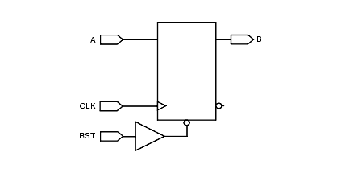
C_1404
Message: Signal is used both as synchronous and asynchronous reset/set/load
Description This rule ensures that a reset, set, or load line drives only a synchronous reset, set, or load pin of a register or only an asynchronous pin of a register.To check this rule on the entire design you must specify a top design unit using the -top switch. Policy Leda Ruleset RESETS Language VHDL/Verilog Type Chip-level Severity Error
C_1405
Message: Register with fixed value reset/set/load is detected
Description This rule detects if the reset, set, or load of a register is tied to a fixed value (ground or VCC).To check this rule on the entire design you must specify a top design unit using the -top switch. Policy Leda Ruleset RESETS Language VHDL/Verilog Type Chip-level Severity Error
C_1406
Message: Register with no reset/set/load is detected
Description This rule searches for all flip-flops that have no reset, set, or load. All sequential elements must have a reset, set, or load for testability purposes.To check this rule on the entire design you must specify a top design unit using the -top switch. Policy Leda Ruleset RESETS Language VHDL/Verilog Type Chip-level Severity Error
Example
Following are examples of valid and invalid VHDL code that illustrate this problem and how to correct it. The code samples are followed by circuit diagrams that also illustrate the problem and the solution.
Invalid VHDL Code:
library IEEE; use IEEE.std_logic_1164.all; use IEEE.std_logic_arith.all; use IEEE.STD_LOGIC_UNSIGNED.conv_integer; entity c_1406 is port ( CLK : in std_logic; RST, DATA_IN : in std_logic; DATA_OUT : out std_logic ); end; architecture arch of c_1406 is signal tmp : std_logic; begin process (CLK, RST) begin if (RST='0') then DATA_OUT <= '0'; elsif (CLK'event and CLK='1') then tmp <= DATA_IN; -- tmp is affected but not initialized DATA_OUT <= tmp; end if; end process; end architecture;Valid VHDL Code:
process (CLK, RST) begin if (RST='0') then DATA_OUT <= '0'; tmp <= '0'; -- tmp initialization elsif (CLK'event and CLK='1') then tmp <= DATA_IN; DATA_OUT <= tmp; end if; end process;Invalid Example:
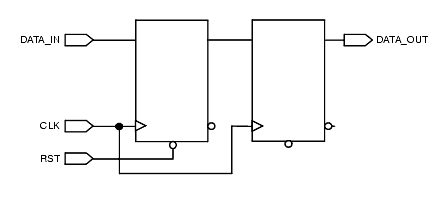
Valid Example:
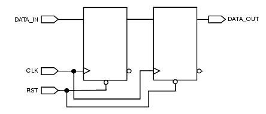
RTL Synthesis Ruleset
The following rules are from the RTL synthesis ruleset:
B_2000
Message: System tasks are not allowed
Description This rule checks that system tasks ($display, $printf, etc.) are not used. System task are not synthesizable. Policy Leda Ruleset RTL_SYNTHESIS Language Verilog Type Block-level Severity Error
Example
The following example shows invalid Verilog code:
module B_2000 ( clk); input clk; always @(posedge clk) begin $display ("Hello World"); // System task detected end initial $printf("hello world"); // System task detected initial $dumpvars(); // System task detected endmoduleB_2001
Message: Shift by a non constant value is not allowed
Description The rule is violated when the Checker detects a shift by a non-constant value (dynamic evaluation) This value must be an expression that can be evaluated at compilation or elaboration time. A shift by a dynamic value results in a huge combinatorial area. If the shift value can be defined at the compilation or elaboration step, the synthesis tool will only perform net assignment. Policy Leda Ruleset RTL_SYNTHESIS Language Verilog Type Block-level Severity Error
Example
Following are some examples of valid and invalid Verilog code:
Invalid Verilog Code:
module B_2001_BAD (DATA_IN, DATA_OUT, A); input [7:0] DATA_IN; input [3:0] A; output [7:0] DATA_OUT; assign DATA_OUT = (DATA_IN << A); // Shift operator using non-constant //value endmoduleValid Verilog Code:
module B_2001_GOOD1 (DATA_IN, DATA_OUT); input [7:0] DATA_IN; output [7:0] DATA_OUT; assign DATA_OUT = (DATA_IN << 3 ); // Shift value is constant (literal) endmoduleValid Verilog coding:
module B_2001_GOOD-2 (data_in, data_out); input [7:0] data_in ; output [7:0] data_out; parameter n = 4; assign data_out = data_in >> n; // Shift value is constant (parameter) assign data_out = data_in << n; // Shift value is constant (parameter) endmoduleB_2002
Message: Disable statement in always construct may not be synthesizable
Description This rule checks that always constructs do not contain disable statements. Disable statements cannot be synthesized. Policy Leda Ruleset RTL_SYNTHESIS Language Verilog Type Block-level Severity Error
Example
Following is an example of invalid Verilog code:
module b_2002 (clk, flag, a, b, z); input clk, flag, a, b; output z; reg z; always @(posedge clk or negedge flag) begin : block1 if (flag) disable block1; // Disable statement is in always block z <= a & b; end endmoduleB_2003
Message: Disable statement in task may not be synthesizable
Description This rule checks that task bodies do not contain disable statements. Disable statements cannot be synthesized. Policy Leda Ruleset RTL_SYNTHESIS Language Verilog Type Block-level Severity Error
Example
The following is an example of a Verilog code:
module b_2003 (flag, a, b, z, clk); input flag, a, b, clk; output z; reg z; always @(posedge clk) begin t1 (a, b, flag, z); end task t1; input a, b, flag; output z; reg z; begin begin : block1 if (flag) begin disable t1; // Task disable statement in task body disable block1; // Block disable statement in task body end z <= a & b; end end endtask endmoduleB_2004
Message: Disable statement in function may not be synthesizable
Description This rule checks that function bodies do not contain disable statements. Disable statements cannot be synthesized. Policy Leda Ruleset RTL_SYNTHESIS Language Verilog Type Block-level Severity Error
Example
Following is an example of invalid Verilog code:
module b_2004 (a, b, flag, flag1); input a, b, flag; output flag1; reg flag1; function add_func; input ai, b, flag; begin begin : block1 if (flag) begin disable block1; // Block disable statement in function body end add_func = a & b; end end endfunction always @ (a or b or flag) begin flag1 = add_func ( a, b, flag); end endmoduleB_2005
Message: Functions of type real are not synthesizable
Description This rule detects all functions using real variables. Real functions cannot be synthesized. Policy Leda Ruleset RTL_SYNTHESIS Language Verilog Type Block-level Severity Error
Example
Following is an example of invalid Verilog code:
module B_2005 ( a, z); input [2:0] a; output [2:0] z; function real real_func; // Real function declaration input [2:0] data_in; begin real_func = data_in + 2.13; end endfunction function integer int_func; // Integer function declaration begin int_func = 4; end endfunction assign z = real_func(a); endmoduleB_2006
Message: Event declarations are not allowed
Description This rule detects event declarations. Event declarations cannot be synthesized. Policy Leda Ruleset RTL_SYNTHESIS Language Verilog Type Block-level Severity Error
Example
Following are examples of valid and invalid Verilog code that illustrate the problem and how to correct it:
Invalid Verilog Code:
module B_2006_BAD (DATA_IN, DATA_OUT); input DATA_IN; output DATA_OUT; reg DATA_OUT; event clk_event; // Event declaration is not allowed always @(posedge clk_event) begin DATA_OUT <= DATA_IN; end endmoduleValid Verilog Code:
module B_2006_GOOD (CLK, DATA_IN, DATA_OUT); input DATA_IN; input CLK ; // PASS output DATA_OUT; reg DATA_OUT; always @(posedge CLK) begin // The clock is an external signal DATA_OUT <= DATA_IN; end endmoduleB_2007
Message: Same operand on both sides of assignment detected
Description This rule detects self assignments (for example, a <= a). Redundant assignments can generate latches. Policy Leda Ruleset RTL_SYNTHESIS Language Verilog Type Block-level Severity Warning
Example
Following is an example of invalid Verilog code:
module B_2007 (CLK, EN, DATA_IN, DATA_OUT); input CLK, EN, DATA_IN; output DATA_OUT; reg DATA_OUT; always @(posedge CLK) begin if(EN) DATA_OUT <= DATA_IN; else DATA_OUT <= DATA_OUT; // Self assignment end endmoduleB_2008
Message: Delays in signal assignment are ignored by synthesis tool
Description The Checker reports all delays in signal assignments. Delays in signal assignments cannot be synthesized and are ignored by synthesis tools. Policy Leda Ruleset RTL_SYNTHESIS Language VHDL Type Block-level Severity Warning
Example
Following is an example of invalid VHDL code:
library IEEE; use IEEE.std_logic_1164.all; entity b_2008 is port ( CLK, RST, A_IN : in std_logic; A_OUT : out std_logic ); end; architecture RTL of b_2008 is begin process (CLK, RST) begin if(RST = '0') then A_OUT <= '0'; elsif (CLK'event and CLK='1') then A_OUT <= A_IN after 5ns; -- Delay in signal assignment end if; end process; end;B_2009
Message: Delays in conditional signal assignment are ignored by synthesis tool
Description The Checker reports all delays in conditional signal assignments. Delays in signal assignments cannot be synthesized and are ignored by synthesis tools. Policy Leda Ruleset RTL_SYNTHESIS Language VHDL Type Block-level Severity Warning
Example
Following is an example of invalid VHDL code:
library IEEE, STD; use IEEE.std_logic_1164.all; use IEEE.std_logic_components.all; use IEEE.std_logic_misc.all; entity b_2009 is port ( A_IN, B_IN : in std_logic; DATA_OUT : out std_logic ); end; architecture RTL of b_2008 is begin DATA_OUT <= A_IN and B_IN after 2ns; -- Delay in conditional end; -- signal assignmentB_2010
Message: Non synthesizeable operator === !== encountered
Description This rule detects all usage of the "===" and "!==" operators in HDL source because they cannot be synthesized. Policy Leda Ruleset RTL_SYNTHESIS Language Verilog Type Block-level Severity Error
Example
Following is an example of invalid Verilog code:
module B_2010_BAD (A, B, SEL, DATA_OUT); input A, B, SEL; output DATA_OUT; reg DATA_OUT; always@(A or B or SEL) begin if (SEL === 1'bX) // "===" operator detected DATA_OUT <= A; else DATA_OUT <= B; end endmoduleB_2011
Message: Variable is not always initialized in process body before being read
Description This rule checks that all variables in a process statement are initialized. A variable that is read before a value is assigned to it can cause simulation mismatches between pre- and post-synthesis. This rule only applies to combinatorial processes. Policy Leda Ruleset RTL_SYNTHESIS Language VHDL Type Block-level Severity Warning
Example
Following is an example of invalid VHDL code that exhibits this problem:
-- B_2011: Variable is not always initialized in combinatorial process -- body before being read library IEEE; use IEEE.std_logic_1164.all; use IEEE.std_logic_unsigned.all; use IEEE.std_logic_arith.all; entity B_2011_1 is port (EN, EN2 : in std_logic; A_IN : in std_logic_vector (3 downto 0); A_OUT : out std_logic_vector(3 downto 0) ); end; architecture RTL of B_2011_1 is begin process (EN, EN2, A_IN) variable tmp_1 : std_logic_vector(3 downto 0); variable tmp_2 : integer; begin tmp_2 := 0; if (EN = '0') then A_OUT <= CONV_STD_LOGIC_VECTOR(tmp_2,4); else if (EN2 = '1') then A_OUT <= tmp_1; -- FAIL : NOT initialized else A_OUT <= A_IN; end if; end if; end process; end;B_2031
Message: Both edges of the signal used in the sensitivity list
Description Leda flags this rule when it finds both the edges of a signal is used in the sensitivity list. Policy Leda Ruleset RTL_SYNTHESIS Language Verilog Type Block-level Severity Warning
Example
Following is an example of invalid Verilog code:
module test (input wire reset, clk, D, output reg Q); always@(posedge clk or negedge clk) // FAIL begin if(!reset) Q <= 1'b0; else Q <= D; end endmodule
B_2033
Message: Unrecognized synthesis directive
Description Leda flags this rule when it finds a synthesis directive that DC does not supports. Policy Leda Ruleset RTL_SYNTHESIS Language Verilog/VHDL Type Block-level Severity Warning
Example
Following is an example of invalid Verilog code:
module test (input wire reset, clk, D, output reg Q); always@(posedge clk or reset) // synopsys synth_test // Rule flags here begin if(!reset) Q <= 1'b0; else Q <= D; end endmoduleB_2034
Message: Reset signal use mode not same as its pragma mode
Description Leda flags this rule when it finds the use mode of a reset signal is not same as its pragma mode. Policy Leda Ruleset RTL_SYNTHESIS Language Verilog Type Block-level Severity Warning
Example
Following is an example of invalid Verilog code:
module dff (reset, set, Q, D, clk); input reset, set, clk, D; output Q; reg Q; //synopsys async_set_reset "set, reset" ^^^^^^^^^^^^^^^^^^^^^^^^^^^^^^^^^^^^^^^ always @(posedge clk) if (~reset) // FAIL Q <= 0; else if (~set) // FAIL Q <= 1; else Q <= D endmoduleB_2035
Message: Unsynthesizable IF statement
Description Leda flags this rule when it finds an unsynthesizable if statement. Policy Leda Ruleset RTL_SYNTHESIS Language VHDL Type Block-level Severity Warning
Data Types Ruleset
The following rules are from the data types ruleset:
B_3000
Message: Assigning a 0 or 1 (32bits) to one bit is not allowed
Description This rule detects assignment of a 0 or 1 to a 1-bit value. Integer variables 0 and 1 are coded on 32 bits. Use 1'b0 and 1'b1 for such assignments. Policy Leda Ruleset DATA_TYPES Language Verilog Type Block-level Severity Warning
B_3001
Message: Array of integer is not allowed
Description This rule detects the declaration of arrays of integers. These kinds of arrays are not accepted by synthesis tools. Policy Leda Ruleset DATA_TYPES Language Verilog Type Block-level Severity Error
B_3002
Message: Array of time is not allowed
Description This rule detects the declaration of arrays of time. Arrays of time are not accepted by synthesis tools. Policy Leda Ruleset DATA_TYPES Language Verilog Type Block-level Severity Error
B_3003
Message: Test expression in if_statement is expected to be one bit wide
Description The expression in an if_statement is expected to be 1-bit wide. Policy Leda Ruleset DATA_TYPES Language Verilog Type Block-level Severity Error
B_3004_A
Message: Unrecommended blocking assignment (converting integer to real)
Description This rule detects automatic conversion from integer to real in blocking assignment. Implicit type conversion does not exist in VHDL and may cause problems when using a tool for translation from Verilog to VHDL. Policy Leda Ruleset DATA_TYPES Language Verilog Type Block-level Severity Warning
B_3004_B
Message: Unrecommended non blocking assignment (converting integer to real)
Description This rule detects automatic conversion from integer to real in anon-blocking assignment. Implicit type conversion does not exist in VHDL and may cause problems when using a tool for translation from Verilog to VHDL. Policy Leda Ruleset DATA_TYPES Language Verilog Type Block-level Severity Warning
B_3004_C
Message: Unrecommended procedural continuous assignment (converting integer to real)
Description This rule detects automatic conversion from integer to real in a procedural continuous assignment. Implicit type conversion does not exist in VHDL and may cause problems when using a tool for translation from Verilog to VHDL. Policy Leda Ruleset DATA_TYPES Language Verilog Type Block-level Severity Warning
B_3004_D
Message: Unrecommended procedural continuous force (converting integer to real)
Description This rule detects automatic conversion from integer to real in a procedural continuous force. Implicit type conversion does not exist in VHDL and may cause problems when using a tool for translation from Verilog to VHDL. Policy Leda Ruleset DATA_TYPES Language Verilog Type Block-level Severity Warning
B_3005_A
Message: Unrecommended blocking assignment (converting unsigned to real)
Description This rule detects automatic conversion from unsigned to real in blocking assignments. Implicit type conversion does not exist in VHDL and may cause problems when using a tool for translation from Verilog to VHDL. Policy Leda Ruleset DATA_TYPES Language Verilog Type Block-level Severity Warning
B_3005_B
Message: Unrecommended non blocking assignment (converting unsigned to real)
Description This rule detects automatic conversion from unsigned to real in non-blocking assignments. Implicit type conversion does not exist in VHDL and may cause problems when using a tool for translation from Verilog to VHDL. Policy Leda Ruleset DATA_TYPES Language Verilog Type Block-level Severity Warning
B_3005_C
Message: Unrecommended procedural continuous assignment (converting unsigned to real)
Description This rule detects automatic conversion from unsigned to real in a procedural continuous assignment. Implicit type conversion does not exist in VHDL and may give problems when using a tool for translation from Verilog to VHDL. Policy Leda Ruleset DATA_TYPES Language Verilog Type Block-level Severity Warning
B_3005_D
Message: Unrecommended procedural continuous force (converting unsigned to real)
Description This rule detects automatic conversion from unsigned to real in a procedural continuous force. Implicit type conversion does not exist in VHDL and may cause problems when using a tool for translation from Verilog to VHDL. Policy Leda Ruleset DATA_TYPES Language Verilog Type Block-level Severity Warning
B_3006_A
Message: Unrecommended blocking assignment (converting real to integer)
Description This rule detects automatic conversions from real to integer in blocking assignments. Implicit type conversion does not exist in VHDL and may cause problems when using a tool for translation from Verilog to VHDL. Policy Leda Ruleset DATA_TYPES Language Verilog Type Block-level Severity Warning
B_3006_B
Message: Unrecommended non blocking assignment (converting real to integer)
Description This rule detects automatic conversions from real to integer in non-blocking assignments. Implicit type conversion does not exist in VHDL and may cause problems when using a tool for translation from Verilog to VHDL. Policy Leda Ruleset DATA_TYPES Language Verilog Type Block-level Severity Warning
B_3006_C
Message: Unrecommended procedural continuous assignment (converting real to integer)
Description This rule detects automatic conversions from real to integer in procedural continuous assignments. Implicit type conversion does not exist in VHDL and may cause problems when using a tool for translation from Verilog to VHDL. Policy Leda Ruleset DATA_TYPES Language Verilog Type Block-level Severity Warning
B_3006_D
Message: Unrecommended procedural continuous force (converting real to integer)
Description This rule detects automatic conversions from real to integer in procedural continuous forces. Implicit type conversion does not exist in VHDL and may cause problems when using a tool for translation from Verilog to VHDL. Policy Leda Ruleset DATA_TYPES Language Verilog Type Block-level Severity Warning
B_3007_A
Message: Unrecommended blocking assignment (converting unsigned to integer)
Description This rule detects automatic conversions from unsigned to integer in blocking assignments. Implicit type conversion does not exist in VHDL and may cause problems when using a tool for translation from Verilog to VHDL. Policy Leda Ruleset DATA_TYPES Language Verilog Type Block-level Severity Warning
B_3007_B
Message: Unrecommended non blocking assignment (converting unsigned to integer)
Description This rule detects automatic conversions from unsigned to integer in non-blocking assignments. Implicit type conversion does not exist in VHDL and may cause problems when using a tool for translation from Verilog to VHDL. Policy Leda Ruleset DATA_TYPES Language Verilog Type Block-level Severity Warning
B_3007_C
Message: Unrecommended procedural continuous assignment (converting unsigned to integer)
Description This rule detects automatic conversions from unsigned to integer in procedural continuous assignments. Implicit type conversion does not exist in VHDL and may cause problems when using a tool for translation from Verilog to VHDL. Policy Leda Ruleset DATA_TYPES Language Verilog Type Block-level Severity Warning
B_3007_D
Message: Unrecommended procedural continuous force (converting unsigned to integer)
Description This rule detects automatic conversions from unsigned to integer in procedural continuous forces. Implicit type conversion does not exist in VHDL and may cause problems when using a tool for translation from Verilog to VHDL. Policy Leda Ruleset DATA_TYPES Language Verilog Type Block-level Severity Warning
B_3008_A
Message: Unrecommended blocking assignment (converting integer to unsigned)
Description This rule detects automatic conversions from integer to unsigned in blocking assignments. Implicit type conversion does not exist in VHDL and may cause problems when using a tool for translation from Verilog to VHDL. Policy Leda Ruleset DATA_TYPES Language Verilog Type Block-level Severity Warning
B_3008_B
Message: Unrecommended non blocking assignment (converting integer to unsigned)
Description This rule detects automatic conversions from integer to unsigned in non-blocking assignments. Implicit type conversion does not exist in VHDL and may cause problems when using a tool for translation from Verilog to VHDL. Policy Leda Ruleset DATA_TYPES Language Verilog Type Block-level Severity Warning
B_3008_C
Message: Unrecommended procedural continuous assignment (converting integer to unsigned)
Description This rule detects automatic conversions from integer to unsigned in procedural continuous assignments. Implicit type conversion does not exist in VHDL and may cause problems when using a tool for translation from Verilog to VHDL. Policy Leda Ruleset DATA_TYPES Language Verilog Type Block-level Severity Warning
B_3008_D
Message: Unrecommended procedural continuous force (converting integer to unsigned)
Description This rule detects automatic conversions from integer to unsigned in procedural continuous forces. Implicit type conversion does not exist in VHDL and may cause problems when using a tool for translation from Verilog to VHDL. Policy Leda Ruleset DATA_TYPES Language Verilog Type Block-level Severity Warning
B_3008_E
Message: Unrecommended continuous assignment (converting integer to unsigned)
Description This rule detects automatic conversions from integer to unsigned in continuous assignments. Implicit type conversion does not exist in VHDL and may cause problems when using a tool for translation from Verilog to VHDL. Policy Leda Ruleset DATA_TYPES Language Verilog Type Block-level Severity Warning
B_3009_A
Message: Unrecommended blocking assignment (converting real to unsigned)
Description This rule detects automatic conversions from real to unsigned in blocking assignments. Implicit type conversion does not exist in VHDL and may cause problems when using a tool for translation from Verilog to VHDL. Policy Leda Ruleset DATA_TYPES Language Verilog Type Block-level Severity Warning
B_3009_B
Message: Unrecommended non blocking assignment (converting real to unsigned)
Description This rule detects automatic conversions from real to unsigned innon-blocking assignments. Implicit type conversion does not exist in VHDL and may cause problems when using a tool for translation from Verilog to VHDL. Policy Leda Ruleset DATA_TYPES Language Verilog Type Block-level Severity Warning
B_3009_C
Message: Unrecommended procedural continuous assignment (converting real to unsigned)
Description This rule detects automatic conversions from real to unsigned in procedural continuous assignments. Implicit type conversion does not exist in VHDL and may cause problems when using a tool for translation from Verilog to VHDL. Policy Leda Ruleset DATA_TYPES Language Verilog Type Block-level Severity Warning
B_3009_D
Message: Unrecommended procedural continuous force (converting real to unsigned)
Description This rule detects automatic conversions from real to unsigned in procedural continuous forces. Implicit type conversion does not exist in VHDL and may cause problems when using a tool for translation from Verilog to VHDL. Policy Leda Ruleset DATA_TYPES Language Verilog Type Block-level Severity Warning
B_3009_E
Message: Unrecommended continuous assignment (converting real to unsigned)
Description This rule detects automatic conversions from real to unsigned in continuous assignments. Implicit type conversion does not exist in VHDL and may cause problems when using a tool for translation from Verilog to VHDL. Policy Leda Ruleset DATA_TYPES Language Verilog Type Block-level Severity Warning
B_3010
Message: Loop index must be declared as an integer
Description This rule is violated when the type of a for statement index is not an integer. This can cause problems with code portability. Policy Leda Ruleset DATA_TYPES Language Verilog Type Block-level Severity Error
Expressions Ruleset
The following rules are from the expressions ruleset:
B_3200
Message: Unequal length operand in bit/arithmetic operator LHS : <%size>, RHS : <%size>
Description This rule verifies that in a bit/arithmetic operation (+, -, *, /, &, |, ^,^~,~^) the bit sizes of the two operands are equal. This can cause problems with code portability. Policy Leda Ruleset EXPRESSIONS Language Verilog Type Block-level Severity Warning
Example
Following are examples of valid and invalid Verilog code that illustrate this problem and how to correct it:
Invalid Verilog Code:
module B_3200_BAD (A, B, DATA_OUT); input [1:0] A; input B; output [2:0] DATA_OUT; assign DATA_OUT = A + B; // Unequal length operand, A is 2 bits but B // is 1 bit endmoduleValid Verilog Code:
module B_3200_GOOD (A, B, DATA_OUT); input [1:0] A; input [1:0] B; output [2:0] DATA_OUT; assign DATA_OUT = A + B; // Equal length operand, A and B are same size endmoduleB_3201
Message: Unequal length operand in comparison operator LHS : <%size>, RHS : <%size>
Description This rule verifies that in a bit/arithmetic comparison (<, <=, >, >=, ===,!==, ==,!=) the bit sizes of the two operands are equal. This can cause problems with code portability. Policy Leda Ruleset EXPRESSIONS Language Verilog Type Block-level Severity Warning
Example
Following are examples of valid and invalid Verilog code that illustrate this problem and how to correct it:
Invalid Verilog Code:
module B_3201_BAD (A, B, DATA_OUT); input [1:0] A; input B; output DATA_OUT; reg DATA_OUT; always@(A or B) begin if (A < B) // Unequal length operand: A is 2 bits and B is 1 bit DATA_OUT <= 1'b1; else DATA_OUT <= 1'b0; end endmoduleValid Verilog Code
module B_3201_GOOD (A, B, DATA_OUT); input [1:0] A; input [1:0] B; output DATA_OUT; reg DATA_OUT; always@(A or B) begin if (A < B) // A and B are same size DATA_OUT <= 1'b1; else DATA_OUT <= 1'b0; end endmoduleB_3202
Message: Delay is not constant expression
Description This rule is violated when the delay value of a delay control is not constant (that is, it cannot be evaluated during HDL compilation). The expression types that are allowed by the rule are the parameters, any literals and minimum, typical, and maximum delay expressions. Delay controls are different from gate or net delays. Delay control is a procedural timing control that is used to specify the time duration between initially encountering the statement and when the statement actually executes. The gate or net delay specifies the propagation delay from gate input to gate output (gate delay) or the time it takes changing value (net delay). Policy Leda Ruleset EXPRESSIONS Language Verilog Type Block-level Severity Error
Example
Following are examples of valid and invalid Verilog coding that illustrate this problem and how to correct it:
Invalid Verilog Code:
module B_3202_1 (A, B, C, DELAY); input A,B; input [3:0] DELAY; output C; assign # DELAY C = A & B; // Non-constant delay value endmoduleValid Verilog Code:
module B_3202_2 (A, B, C); input A,B; output C; assign # 1 C = A & B; // Constant delay value (literal) endmoduleValid Verilog coding:
module B_3202_3 (A, B, C); parameter DELAY = 1; input A,B; output C; assign # DELAY C = A & B; // Constant delay value (parameter) endmoduleB_3203
Message: The expression in for loop must not be constant
Description The Checker verifies that in a for statement, the condition expression is a dynamic evaluation expression (that is, an expression that can only be evaluated in simulation). If the expression is constant, the for statement may loop indefinitely (for example: for (j = 3; 0; j = j - 2), j=0 is never reached). Policy Leda Ruleset EXPRESSIONS Language Verilog Type Block-level Severity Warning
Example
Following is a Verilog code example, with the for loops that contain comparisons or constants noted with comments:
module B_3203 (a, z); input [3:0] a; output [3:0] z; reg [3:0] comb; integer j; parameter p1 = 12; parameter p2 = 1.5; always @(a) begin for (j = 3; 0; j = j - 1) // End loop value is constant (0) comb[j] = a[j]; end always @(a) begin for (j = 3; j <10; j = j + 1) // End loop value is a comparison comb[j] = a[j]; end always @(a) begin for (j = 3; j <=10; j = j + 1) // End loop value is a comparison comb[j] = a[j]; end always @(a) begin for (j = 3; 4*p1 - p2; j = j + 1) // End loop value is constant comb[j] = a[j]; end assign z = comb; endmoduleB_3204
Message:? in based number constant is not allowed
Description This rule forbids the use of ? in a logic string literal. Design Compiler identifies ? assignments as unconnected. Policy Leda Ruleset EXPRESSIONS Language Verilog Type Block-level Severity Warning
Example
Following is an example of invalid Verilog code:
module B_3204 (A, B, SEL, DATA_OUT); input A,B; input [3:0] SEL; output DATA_OUT; reg [3:0] DATA_OUT; always@(A or B or SEL) begin if (SEL==4'b1???) // Undefined value for comparison DATA_OUT <= A; else DATA_OUT <= B; end endmoduleB_3206
Message: X in based number constant
Description The Checker reports X in enumerated literals. Policy Leda Ruleset EXPRESSIONS Language VHDL Type Block-level Severity Warning
Example
Following is an example of invalid VHDL code:
library IEEE; use IEEE.std_logic_1164.all; entity b_3206 is port ( CLK, RST, SEL, A_IN : in std_logic; A_OUT : out std_logic ); end; architecture RTL of b_3206 is begin process (CLK, RST) begin if (RST = 'X') then -- Invalid comparison to 'X' value A_OUT <= '0'; elsif (CLK'event and CLK='1') then if (SEL = '1') then A_OUT <= A_IN; else A_OUT <= 'X'; -- Invalid assignment to 'X' value end if; end if; end process; end;B_3207
Message: Z in based number constant
Description The Checker reports Z in enumerated literals. Policy Leda Ruleset EXPRESSIONS Language VHDL Type Block-level Severity Warning
Example
Following is an example of invalid VHDL code:
library IEEE; use IEEE.std_logic_1164.all; entity b_3207 is port ( CLK, RST, SEL, A_IN : in std_logic; A_OUT : out std_logic ); end; architecture RTL of b_3207 is begin process (CLK, RST) begin if (RST = 'Z') then -- Invalid comparison to 'Z' value A_OUT <= '0'; elsif (CLK'event and CLK='1') then if (SEL = '1') then A_OUT <= A_IN; else A_OUT <= 'Z'; -- Invalid assignment to 'Z' value end if; end if; end process; end;B_3208
Message: Unequal length LHS and RHS in assignment LHS: <%size>, RHS: <%size>
Description None. Policy Leda Ruleset EXPRESSIONS Language Verilog Type Block-level Severity Warning
B_3209
Message: Unequal length port and connexion in module instantiation Formal: <%size>, Actual: <%size>
Description None. Policy Leda Ruleset EXPRESSIONS Language Verilog Type Block-level Severity Warning
B_3210
Message: Unequal length arguments in function call or task enable Formal: <%size>, Actual: <%size>
Description None. Policy Leda Ruleset EXPRESSIONS Language Verilog Type Block-level Severity Warning
B_3211
Message: Unequal length between case expression and case item condition in case, casex or casez Expression: <%size>, Item: <%size>
Description None. Policy Leda Ruleset EXPRESSIONS Language Verilog Type Block-level Severity Warning
B_3212
Message: Signed and unsigned operands should not be used in same operation
Description If a mixture of signed and unsigned operands are used, the result is unsigned and may give unexpected results. The LRM indicates for all expression whether it's signed or unsigned, and this information is used by the attribute. Policy Leda Ruleset EXPRESSIONS Language Verilog Type Block-level Severity Warning
Example
module B_3212 (s_a, s_b2, s_b3, us_b); input signed [9:0] s_a,s_b2; input signed [9:0] s_b3; input unsigned [9:0] us_b; reg signed [10:0] s_x; wire signed [10:0] s_x2; //Tests for signed/unsigned arithmetic operations assign s_x2 = s_a - s_b3 * f(us_b); //pass assign s_x2 = s_a - s_b2 * s_a; //pass assign s_x2 = f(us_b) + $unsigned(b); //Fail assign s_x2 = g(us_b) + $unsigned(b); //pass assign s_x2 = $signed(a) + $unsigned(b); //Fail assign s_x2 = $unsigned(a) + $unsigned(b); //pass assign s_x2 = s_a + us_b; //Fail always @(s_a or us_b or s_b2) begin s_x <= s_a - us_b * s_b2; //Fail s_x <= s_a - s_b2 * us_b; //Fail s_x <= s_a - s_b3 * s_a; //pass s_x <= s_a - s_b3 * f(us_b); //pass s_x <= s_a - s_b3 * g(us_b); //Fail end endmodule function signed f; input unsigned [9:0] c; return 1; endfunction function unsigned g; input unsigned [9:0] c; return $unsigned(1); endfunctionStatements Ruleset
The following rules are from the statements ruleset:
B_3400
Message: Empty block found: No statements in block
Description The Checker detects empty blocks in all units. Empty blocks are optimized out during synthesis; they perform no function, occupy disk space, and cause confusion. Policy Leda Ruleset STATEMENTS Language Verilog Type Block-level Severity Warning
B_3401
Message: Blocking delay not allowed in non-blocking assignment
Description This rule fires if there is a delay in a non-blocking assignment. Blocking delays in non-blocking assignments are not synthesizable. Policy Leda Ruleset STATEMENTS Language Verilog Type Block-level Severity Warning
Example
Rule B_3401 fires if there is a delay in a non-blocking assignment. The LRM defines the non-blocking assignment as:
non-blocking-assignment: := [delay_or_event_control] expression.
If you consider the following two statements:
#10 ff_out <= data_in; // This non-blocking assignment has no delay, // B_3401 will not fire. #10 ff_out <= #5 data_in; // This non-blocking assignment has a delay 5, // B_3401 will fireThe #10 delay is the delay of the procedural_timing_control_statement, which is defined in the LRM as:
procedural_timing_control_statement: := delay_or_event_control statement
In this example, after the delay_or_event_control is #10, the statement is ff_out <= comb, which itself has no delay.
In the following example, ProVerilog fires for ff_in <= #10 data_in
always @(posedge clk) begin : Data_input ff_in <= #10 data_in; // FAIL (B_3401 fires, the non-blocking end // assignment delay is 10 // process Data_input assign comb = ff_in; always @(posedge clk) begin : Data_output #10 ff_out <= comb; // B_3401 does not fire this case end // process Data_outputB_3402
Message: Task uses a global variable
Description If a variable declared outside the task is used in a task declaration, the Checker reports a warning. Writing to variables declared outside the task body is not allowed. Policy Leda Ruleset STATEMENTS Language Verilog Type Block-level Severity Warning
Example
Following is an example of invalid Verilog code that uses a global variable declared outside the task:
module G_3402_1 (a, b,z); input a; input b; output z; reg comb; always @(a or b) begin and_op (a, b); end task and_op; // FAIL input a; input b; begin comb = a & b; // Fails because global variable comb is used end endtask assign z = comb; task is_ok; //PASS input a; input b; output local_var; reg local_var; begin local_var = a & b; // B_3402 does not fire in this case because no // global variables are used inside the task end endtask endmoduleB_3403
Message: Case statement should have a default case
Description This rule verifies that a case statement has a default case for Verilog or an "others" clause for VHDL. If not, the Checker reports a warning. If the case is not fully specified and there is no default statement (in Verilog), a latch is inferred. Policy Leda Ruleset STATEMENTS Language VHDL/Verilog Type Block-level Severity Warning
B_3404
Message: Casex statement should have a default case
Description This rule verifies that a casex statement has a default case. If not, the Checker reports a warning. If the case is not fully specified and there is no default statement, a latch is inferred. Policy Leda Ruleset STATEMENTS Language Verilog Type Block-level Severity Warning
B_3405
Message: Casez statement should have a default case
Description This rule verifies that a casez statement has a default case. If not, the Checker reports a warning. If the case is not fully specified and there is no default statement, a latch is inferred. Policy Leda Ruleset STATEMENTS Language Verilog Type Block-level Severity Warning
B_3407
Message: No null statements in process statement
Description Using null statements is not a tool issue but more of a methodology issue (this is an example of what is usually called a bad coding practice). Null statements are often used when design functionality is not fully described or when all conditions of a case are not correctly defined. This can create bugs in the design. Policy Leda Ruleset STATEMENTS Language VHDL Type Block-level Severity Warning
Example
Following is an example of invalid VHDL code:
library IEEE; use IEEE.std_logic_1164.all; entity b_3407 is port ( CLK, RST, A_IN : in std_logic; A_OUT : out std_logic ); end; architecture RTL of b_3407 is begin process(CLK) begin if (CLK'event and CLK='1') then A_OUT <= A_IN; else NULL; -- FAIL: Don't use NULL statement end if; end process; end;B_3408
Message: Case condition expression should not be constant
Description This rule verifies that no case statement conditions are constants. Condition expressions should not be evaluated during compilation. A constant expression violates the purpose of a case statement. Policy Leda Ruleset STATEMENTS Language VHDL Type Block-level Severity Error
Example
The following is a invalid VHDL code example because it uses a constant in a case condition expression:
entity B_3408_OK is port ( A_IN ,SEL : in std_logic; A_OUT : out std_logic ); end; architecture RTL_BAD of B_3408 is constant TMP : std_logic := '1'; constant FS_COND : std_logic := '1'; begin process (SEL, A_IN) begin case(FS_COND) is -- FAIL: Case condition expression when TMP => A_OUT <= A_IN; -- should NOT be constant when others => A_OUT <= 'X'; end case; end process; end;Passing Condition:
architecture RTL_GOOD of B_3408 is begin process (SEL, A_IN) begin case(SEL) is -- PASS when '1' => A_OUT <= A_IN; when others => A_OUT <= '0'; end case; end process; end;B_3409
Message: While condition expression is constant
Description This rules verifies that no while statement conditions are constant. Condition expression should not be evaluated during compilation. If a constant is used, the while will never come out of the loop. Policy Leda Ruleset STATEMENTS Language VHDL/Verilog Type Block-level Severity Warning
Example
The following are invalid VHDL and Verilog coding examples because they use constants for while conditions:
Invalid VHDL Code:
architecture RTL of B_3409_1 is signal clk : std_logic ; signal count : std_logic_vector(3 downto 0) ; signal qout : std_logic_vector(3 downto 0) ; constant TMP : std_logic := '1'; begin process(clk) begin while (TMP = '1' ) loop -- FAIL: Don't use constant if(clk'event and clk = '1') then -- for while condition count <= count + '1'; qout <= qout + count; end if; end loop; end process; end;Invalid Verilog Code:
module G_3409_1 ( a, z ); input [3:0] a; output [3:0] z; reg [3:0] comb; reg test; integer j; integer k; always @(a) begin j = 0; while (k == 2) // PASS begin comb[j] = a[j]; j = j + 1; end end always @(a) begin j = 0; while (3) // FAIL begin comb[j] = a[j]; j = j + 1; end end end moduleB_3410
Message: X in case expression
Description This rule verifies that no case expressions contain an X. There will be simulation mismatches if different simulators are used. Policy Leda Ruleset STATEMENTS Language VHDL Type Block-level Severity Warning
Example
The following is an example of invalid VHDL code because it uses an X in a case expression:
library IEEE; use IEEE.std_logic_1164.all; entity b_3410 is port ( SEL :in std_logic; A_OUT :out std_logic ); end; architecture RTL of b_3410 is begin process (SEL) begin case (SEL) is when '1' => A_OUT <= '1'; when 'X' => A_OUT <= '0'; -- FAIL: Don't use X in choice of -- case statement when others => A_OUT <= 'Z'; end case; end process; end;B_3411
Message: Assignment to a supply0 type net
Description All assignments to a supply0 net are reported as errors. A supply0 net is connected to ground; assignments to supply type nets can cause problems with layout tools. Policy Leda Ruleset STATEMENTS Language Verilog Type Block-level Severity Error
B_3412
Message: Assignment to a supply1 type net
Description All assignments to a supply1 net are reported as errors. A supply1 net is connected to power; assignments to supply type nets can cause problems with layout tools. Policy Leda Ruleset STATEMENTS Language Verilog Type Block-level Severity Error
B_3413
Message: Task call in a combinational block
Description This rule verifies that a combinatorial block does not call a task. If so, the Checker reports an error. A task can only be called from within an always statement. Nested always statements are not allowed in Verilog. Therefore, sequential logic cannot be modeled using a task. A task can easily be remodeled as a function. Policy Leda Ruleset STATEMENTS Language Verilog Type Block-level Severity Note
B_3414
Message: Task call in a sequential block
Description This rule fires if a task is used in a sequential block. A task can only be called from within an always statement. Nested always statements are not allowed in Verilog. Therefore, sequential logic cannot be modeled using a task. A task can easily be remodeled as a function. Policy Leda Ruleset STATEMENTS Language Verilog Type Block-level Severity Note
B_3415
Message: There must be at least one driver for all elements of a signal
Description This rule checks that a signal is at least driven by a signal or a port. Uncontrollable signals cause problems during test insertion; an X is propagated during simulation. Policy Leda Ruleset STATEMENTS Language VHDL Type Block-level Severity Warning
Example
Following is an example of invalid VHDL code:
entity B_3415_1 is port (SEL, A_IN, B_IN : in std_logic; DATA_OUT : out std_logic ); end; architecture RTL of B_3415_1 is signal tmp : std_logic; -- FAIL: Uncontrollable signal begin process (SEL) begin if(SEL = '1') then DATA_OUT <= tmp; else DATA_OUT <= '0'; end if; end process; end;B_3416
Message: Using non-blocking assignments in combinational always may generate incorrect logic
Description Use blocking assignments in always blocks that are written to generate combinational logic. This prevents simulation mismatches between pre- and post-synthesis netlists. Policy Leda Ruleset STATEMENTS Language Verilog Type Block-level Severity Error
B_3417
Message: Use non-blocking assignments in sequential block
Description Use non-blocking assignments in always blocks that are written to generate sequential logic. This prevents simulation mismatches between pre- and post-synthesis netlists. This rule is flagged for unintentional latches also. Policy Leda Ruleset STATEMENTS Language Verilog Type Block-level Severity Error
B_3418
Message: Redundant signal in sensitivity list
Description Redundant or unneeded signals in sensitivity lists can create warnings in synthesis, slow down simulation, and possibly create mismatches between simulation and synthesis models. All redundant signals must be removed from the sensitivity list. Policy Leda Ruleset STATEMENTS Language VHDL/Verilog Type Block-level Severity Error
B_3419
Message: Missing signal in sensitivity list
Description None. Policy Leda Ruleset STATEMENTS Language VHDL/Verilog Type Block-level Severity Error
B_3420
Message: While/forever loop has no break control
Description This rule is flagged when Leda finds a while/forever loop with no break control statement. Policy Leda Ruleset DATA_TYPES Language Verilog Type Block-level Severity Warning
Example
Following is an example of invalid Verilog code:
module test (input wire reset, clk, D, output reg [4:0] count); parameter P = 5; integer I; always begin I = 0; forever // FAIL: No break begin count <= count + I; end while (I < 5) // FAIL: No break begin count <= count + I; i++; end end endmoduleB_3421
Message: Function or subprogram sets a global signal/variable
Description This rule is flagged when Leda finds a function or subprogram sets a global signal/variable. Policy Leda Ruleset DATA_TYPES Language VHDL Type Block-level Severity Warning
Example
Following is an example of invalid VHDL code:
--FAIL global variable "counter" is being set inside function/procedure library IEEE; use IEEE.std_logic_1164.all; use IEEE.std_logic_unsigned.all; use IEEE.Numeric_STD.all; entity shared_var is end; architecture arch of shared_var is subtype short_range is integer range 0 to 1; shared variable counter: short_range := 0; -- FAIL procedure TempProc(A:std_logic) is begin counter := counter + 1;--FAIL shared var. set inside a proc end; impure function TempFunc (A: std_logic) return std_logic is --FAIL1 variable WRITE1: std_logic; begin counter := counter + 1;--FAIL shared var. set inside a proc in function return WRITE1; end TempFunc; begin end arch;
B_3422
Message: Function or subprogram uses a global signal/variable
Description This rule is flagged when Leda finds a function or subprogram uses a global signal/variable. Policy Leda Ruleset DATA_TYPES Language VHDL Type Block-level Severity Warning
Example
Following is an example of invalid VHDL code:
--FAIL global variable "counter" is being read inside function/procedure library IEEE; use IEEE.std_logic_1164.all; use IEEE.std_logic_unsigned.all; use IEEE.Numeric_STD.all; entity shared_var is end; architecture arch of shared_var is subtype short_range is integer range 0 to 1; shared variable counter: short_range := 0; procedure TempProc(A:std_logic) is begin counter := counter + 1; --FAIL shared var. is used inside a proc. end; impure function TempFunc (A: std_logic) return std_logic is variable WRITE1: std_logic; begin counter := counter + 1; --FAIL shared var. is used inside a func. return WRITE1; end TempFunc; begin end arch;B_3423
Message: Do not connect busses to instances in reverse order
Description This rule is flagged when Leda finds a bus signal connected to an instance in reverse order. Policy Leda Ruleset DATA_TYPES Language VHDL Type Block-level Severity Warning
Example
Following is an example of invalid VHDL code:
//In the testcase, both the ports of comp1 are connected to the buses in reverse bit order library IEEE; use IEEE.std_logic_1164.all; use IEEE.std_logic_unsigned.all; use IEEE.Numeric_STD.all; entity reverse_bit is end; architecture arch of reverse_bit is component comp1 port (a : in std_logic_vector (3 downto 0); b : out std_logic_vector (0 to 4) ); end component; signal c : std_logic_vector (0 to 3); signal d : std_logic_vector (4 downto 0); begin c1: comp1 port map ( a => c, --FAIL: reverse bit order b => d --FAIL: reverse bit order ); end arch;B_3426
Message: Avoid using multiple if and case in a process statement that infer a flipflop.
Examples
Description Leda flags this error message when it detects multiple "if" and "case" statements in the description of clock event. Policy Leda Ruleset STATEMENTS Language VHDL Type Block-level Severity Error
The following are examples of valid and invalid code:
Example 1: Fail example
library ieee; use ieee.std_logic_1164.all; use ieee.std_logic_unsigned.all; entity test is port( RSTN : IN std_logic; CLK : IN std_logic ); end test; architecture a of test is signal M_IN,D_IN,IN_ENB,IN_TMP : std_logic; signal sig_reg : std_logic_vector(3 downto 1); constant DE_LAY : integer := 3; begin DELAY_SIGNAL : process (RSTN, CLK) begin if (RSTN = '0') then sig_reg <= (others=>'0'); elsif (CLK'event and CLK='1') then -- multiple if statements if (IN_ENB = '0') then -- 1 if_statement sig_reg <= sig_reg(DE_LAY-1 downto 1) & M_IN; else sig_reg <= sig_reg(DE_LAY-1 downto 1) & D_IN; end if; if(IN_ENB = '1') then -- 2 if_statement sig_reg(3) <= IN_TMP; else sig_reg(3) <= sig_reg(3); end if; -- end if; end process; end a; Configuration: rule_deselect -all rule_select -rule B_3426 Violations: 19: if (RSTN = '0') then ^^ test.vhd:19: STATEM> [ERROR] B_3426: Avoid using multiple if and case in a process statement that infer a flipflopExample 2: Fail example
library ieee; use ieee.std_logic_1164.all; use ieee.std_logic_unsigned.all; entity test is port( RSTN : IN std_logic; CLK : IN std_logic ); end test; architecture a of test is signal M_IN,D_IN,IN_ENB,IN_TMP : std_logic; signal sig_reg : std_logic_vector(3 downto 1); constant DE_LAY : integer := 3; begin DELAY_SIGNAL : process (RSTN, CLK) begin if (RSTN = '0') then -- multiple if statements if(M_IN='0') then -- 1 if_statement sig_reg <= (others=>'0'); end if; if(D_IN='0') then -- 2 if_statement sig_reg <= (others=>'1'); end if; elsif (CLK'event and CLK='1') then if (IN_ENB = '0') then sig_reg <= sig_reg(DE_LAY-1 downto 1) & M_IN; else sig_reg <= sig_reg(DE_LAY-1 downto 1) & D_IN; end if; end if; end process; end a; Configuration: rule_deselect -all rule_select -rule B_3426 Violations: 19: if (RSTN = '0') then ^^ test1.vhd:19: STATEM> [ERROR] B_3426: Avoid using multiple if and case in a process statement that infer a flipflopExample 3: Fail example
library IEEE; use IEEE.std_logic_1164.all; use IEEE.std_logic_arith.all; use IEEE.std_logic_unsigned.all; entity test is port ( -- System RSTN : in std_logic; -- asynchronous reset signal(low active) CLK : in std_logic; -- clock -- INPUT M_IN : in std_logic; -- enable signal D_IN : in std_logic; -- enable signal IN_ENB : in std_logic; -- enable IN_TMP : in std_logic; -- temp -- OUTPUT OUT_ALL : out std_logic_vector(3 downto 1); -- enable signal OUT_3 : out std_logic -- enable signal); end test; architecture RTL of test is -- constant DE_LAY : positive := 3; -- DFF signal sig_reg : std_logic_vector(DE_LAY downto 1); begin ------------------------------------------------------------------------ DELAY_SIGNAL : process (RSTN, CLK) ------------------------------------------------------------------------ begin if (RSTN = '0') then sig_reg <= (others=>'0'); elsif (CLK'event and CLK='1') then -- multiple case statements case IN_ENB is -- 1 case_statement when '0' => sig_reg <= sig_reg(DE_LAY-1 downto 1) & M_IN; when '1' => sig_reg <= sig_reg(DE_LAY-1 downto 1) & D_IN; when others => sig_reg <= "XXX" ; end case; case IN_ENB is -- 2 case_statement when '1' => sig_reg(3) <= IN_TMP; when '0' => sig_reg(3) <= sig_reg(3); when others => sig_reg(3) <= 'X' ; end case; -- end if; end process; ----------------------------------------------------------------------- -- OUTPUT ------------------------------------------------------------------------ OUT_ALL <= sig_reg; OUT_3 <= sig_reg(DE_LAY); ------------------------------------------------------------------------ end RTL; Configuration: rule_deselect -all rule_select -rule B_3426 Violations: 37: if (RSTN = '0') then ^^ test2.vhd:37: STATEM> [ERROR] B_3426: Avoid using multiple if and case in a process statement that infer a flipflopExample 4: Fail example
------------------------------------------------------------------------ -- test ------------------------------------------------------------------------ library IEEE; use IEEE.std_logic_1164.all; use IEEE.std_logic_arith.all; use IEEE.std_logic_unsigned.all; entity test is port ( -- System RSTN : in std_logic; -- asynchronous reset signal(low active) CLK : in std_logic; -- clock -- INPUT M_IN : in std_logic; -- enable signal D_IN : in std_logic; -- enable signal IN_ENB : in std_logic; -- enable IN_TMP : in std_logic; -- temp -- OUTPUT OUT_ALL : out std_logic_vector(3 downto 1); -- enable signal OUT_3 : out std_logic -- enable signal ); end test; architecture RTL of test is -- constant DE_LAY : positive := 3; -- DFF signal sig_reg : std_logic_vector(DE_LAY downto 1); begin ------------------------------------------------------------------------ DELAY_SIGNAL : process (RSTN, CLK) ------------------------------------------------------------------------ begin if (RSTN = '0') then sig_reg <= (others=>'0'); elsif (CLK'event and CLK='1') then -- FALSE -- multiple if and case statement if (IN_ENB = '0') then -- 1 if statment sig_reg <= sig_reg(DE_LAY-1 downto 1) & M_IN; else sig_reg <= sig_reg(DE_LAY-1 downto 1) & D_IN; end if; case IN_ENB is - 1 case_statement when '1' => sig_reg(3) <= IN_TMP; when '0' => sig_reg(3) <= sig_reg(3); when others => sig_reg(3) <= 'X' ; end case; -- end if; end process; ------------------------------------------------------------------------ -- OUTPUT ------------------------------------------------------------------------ OUT_ALL <= sig_reg; OUT_3 <= sig_reg(DE_LAY); ------------------------------------------------------------------------ end RTL; Configuration: rule_deselect -all rule_select -rule B_3426 Violations: 37: if (RSTN = '0') then ^^ test3.vhd:37: STATEM> [ERROR] B_3426: Avoid using multiple if and case in a process statement that infer a flipflopExample 5: Pass example
------------------------------------------------------------------------ -- test ------------------------------------------------------------------------ library IEEE; use IEEE.std_logic_1164.all; use IEEE.std_logic_arith.all; use IEEE.std_logic_unsigned.all; entity test is port ( -- System RSTN : in std_logic; -- asynchronous reset signal(low active) CLK : in std_logic; -- clock -- INPUT M_IN : in std_logic; -- enable signal D_IN : in std_logic; -- enable signal IN_ENB : in std_logic; -- enable IN_TMP : in std_logic; -- temp -- OUTPUT OUT_ALL : out std_logic_vector(3 downto 1); -- enable signal OUT_3 : out std_logic -- enable signal ); end test; architecture RTL of test is -- constant DE_LAY : positive := 3; -- DFF signal sig_reg : std_logic_vector(DE_LAY downto 1); begin ------------------------------------------------------------------------ DELAY_SIGNAL : process (RSTN, CLK) ------------------------------------------------------------------------ begin if (RSTN = '0') then sig_reg <= (others=>'0'); else -- TRUE -- no clock description, not fire if (IN_ENB = '0') then sig_reg <= sig_reg(DE_LAY-1 downto 1) & M_IN; else sig_reg <= sig_reg(DE_LAY-1 downto 1) & D_IN; end if; case IN_ENB is when '1' => sig_reg(3) <= IN_TMP; when '0' => sig_reg(3) <= sig_reg(3); when others => sig_reg(3) <= 'X' ; end case; -- end if; end process; ----------------------------------------------------------------------- -- OUTPUT ------------------------------------------------------------------------ OUT_ALL <= sig_reg; OUT_3 <= sig_reg(DE_LAY); ------------------------------------------------------------------------ end RTL;Finite State Machine Ruleset
The following rules are from the finite state machines ruleset:
B_3600
Message: Code state machines description with one block
Description Code state machines (and other sequential logic) with one sequential block or process. Improve readability by generating complex intermediate variables outside of the sequential block. Policy Leda Ruleset STATE_MACHINES Language VHDL/Verilog Type Block-level Severity Warning
For information on how Leda infers finite state machines, see "Finite State Machine Recognition" .
B_3601
Message: Code state machines description with two blocks
Description Separate the state machine HDL description into two blocks, one for the combinational logic and one for the sequential logic (see following examples). Policy Leda Ruleset STATE_MACHINES Language VHDL/Verilog Type Block-level Severity Warning
For information on how Leda infers finite state machines, see "Finite State Machine Recognition" .
Example
The following examples illustrate how to code valid finite state machines in VHDL and Verilog.
Valid VHDL FSM Coding Example:
library IEEE, STD; use IEEE.std_logic_1164.all; use IEEE.std_logic_components.all; use IEEE.std_logic_misc.all; entity fsm is port ( x : in std_logic; rst : in std_logic; clock : in std_logic; z : out std_logic); end fsm; architecture rtl of fsm is type state is (STATE_0, STATE_1, STATE_2, STATE_3); signal current_state, next_state : state; begin -- combinational process calculates next state COMBO_PROC : process(x, current_state) begin case (current_state) is when STATE_0 => z <= '0'; if x = '0' then next_state <= STATE_0; else next_state <= STATE_1; end if; when STATE_1 => z <= '0'; if x = '0' then next_state <= STATE_1; else next_state <= STATE_2; end if; when STATE_2 => z <= '0'; if x = '0' then next_state <= STATE_2; else next_state <= STATE_3; end if; when STATE_3 => if x = '0' then z <= '0'; next_state <= STATE_3; else z <= '1'; next_state <= STATE_0; end if; when others => next_state <= STATE_0; end case; end process COMBO_PROC; -- synchronous process updates current state SYNCH_PROC : process(rst,clock) begin if (rst ='1') then current_state <= STATE_0; elsif (clock'event and clock ='1') then current_state <= next_state; end if; end process SYNCH_PROC; end rtl;Valid Verilog FSM Coding Example:
module fsm(clock, rst, x, z); input clock, rst, x; output z; reg [1:0] current_state; reg [1:0] next_state; reg z; parameter [1:0] STATE_0 = 0, STATE_1 = 1, STATE_2 = 2, STATE_3 = 3; // combinational process calculates next state always @ (current_state or x) case(current_state) //synopsys parallel_case full_case STATE_0 : begin if (x) begin next_state <= STATE_1; z <= 1'b0; end else begin next_state <= STATE_0; z <= 1'b0; end end STATE_1 : begin if (x) begin next_state <= STATE_2; z <= 1'b0; end else begin next_state <= STATE_1; z <= 1'b0; end end STATE_2 : begin if (x) begin next_state <= STATE_3; z <= 1'b0; end else begin next_state <= STATE_2; z <= 1'b0; end end STATE_3 : begin if (x) begin next_state <= STATE_0; z <= 1'b1; end else begin next_state <= STATE_3; z <= 1'b0; end end default : begin next_state <= STATE_0; z <= 1'b0; end endcase always @ ( posedge clock or negedge rst_na) begin if (!rst_na) current_state <= STATE_0; else current_state <= next_state; end endmoduleB_3602
Message: Moore style description of state machines is recommended
Description Usually, Moore style state machines are recommended. In a Moore style state machine, for a given state output values are defined and do not depend on any inputs. This avoids combinatorial paths between inputs and outputs that may create timing issues when integrating the state machine in the whole design. The drawback of Moore style state machines is that the number of states increases. Select this rule or rule B_3603 depending on your company's recommended coding style. Policy Leda Ruleset STATE_MACHINES Language VHDL/Verilog Type Block-level Severity Warning
For information on how Leda infers finite state machines, see "Finite State Machine Recognition" . In the following example of a Moore style state machine, the z output is clearly defined to a fixed value and does not depend on any signal.
Example
module fsm(clock,rst,z); input clock; input rst; output z; reg [1:0] current_state; reg [1:0] next_state; reg z; parameter [1:0] STATE_0 = 0, STATE_1 = 1, STATE_2 = 2, STATE_3 = 3; always @(current_state) case(current_state) STATE_0:begin next_state = STATE_1; z = 1'b0; end STATE_1:begin next_state = STATE_2; z = 1'b0; end STATE_2:begin next_state = STATE_3; z = 1'b1; end STATE_3:begin next_state = STATE_0; z = 1'b1; end default:begin next_state = STATE_0; z = 1'b0; end endcase always @(posedge clock or negedge rst) begin if (rst==1'b0) current_state <= STATE_0; else current_state <= next_state; end endmoduleB_3603
Message: Mealy style description of state machines is recommended
Description In a Mealy style state machine, the outputs depend not only on the current state, but also on the inputs. There is a risk of timing issues with this coding style, but the number of states decreases compared to Moore style state machines. Select this rule or rule B_3602 depending on your company's recommended coding style. Policy Leda Ruleset STATE_MACHINES Language VHDL/Verilog Type Block-level Severity Warning
For information on how Leda infers finite state machines, see "Finite State Machine Recognition" . In the following example of a Mealy style state machine, in the STATE_0 state, depending on the value of my_input, z will can be 0 or 1 and the next_state will be different.
Example
module fsm(clock, rst, z, my_input); input clock; input rst; input my_input; output z; reg [1:0] current_state; reg [1:0] next_state; reg z; parameter [1:0] STATE_0 = 0, STATE_1 = 1, STATE_2 = 2; always @(current_state or my_input) case(current_state) STATE_0:begin if (my_input==1'b0) begin next_state = STATE_1; z = 1'b0; end else begin next_state = STATE_0; z = 1'b1; end end STATE_1:begin next_state = STATE_2; z = 1'b0; end STATE_2:begin next_state = STATE_0; z = 1'b1; end default:begin next_state = STATE_0; z = 1'b0; end endcase always @(posedge clock or negedge rst) begin if (rst==1'b0) current_state <= STATE_0; else current_state <= next_state; end endmoduleB_3604
Message: Assign a default state to the state machines
Description Assign a default state for the state machine. This is useful to implement graceful entry into the idle state if no other state is initiated. For VHDL, assign a state for the "others" condition and for Verilog, assign a "default" state as shown in the following examples. Policy Leda Ruleset STATE_MACHINES Language VHDL/Verilog Type Block-level Severity Warning
For information on how Leda infers finite state machines, see "Finite State Machine Recognition" .
Example
The following examples illustrate how to code valid finite state machines in VHDL and Verilog.
Valid VHDL FSM Coding Example:
library IEEE, STD; use IEEE.std_logic_1164.all; use IEEE.std_logic_components.all; use IEEE.std_logic_misc.all; entity fsm is port ( x : in std_logic; rst : in std_logic; clock : in std_logic; z : out std_logic); end fsm; architecture rtl of fsm is type state is (STATE_0, STATE_1, STATE_2, STATE_3); signal current_state, next_state : state; begin -- combinational process calculates next state COMBO_PROC : process(x, current_state) begin case (current_state) is when STATE_0 => z <= '0'; if x = '0' then next_state <= STATE_0; else next_state <= STATE_1; end if; when STATE_1 => z <= '0'; if x = '0' then next_state <= STATE_1; else next_state <= STATE_2; end if; when STATE_2 => z <= '0'; if x = '0' then next_state <= STATE_2; else next_state <= STATE_3; end if; when STATE_3 => if x = '0' then z <= '0'; next_state <= STATE_3; else z <= '1'; next_state <= STATE_0; end if; when others => next_state <= STATE_0; end case; end process COMBO_PROC; -- synchronous process updates current state SYNCH_PROC : process(rst, clock) begin if (rst ='1') then current_state <= STATE_0; elsif (clock'event and clock ='1') then current_state <= next_state; end if; end process SYNCH_PROC; end rtl;Valid Verilog FSM Coding Example:
module fsm(clock, rst, x, z); input clock, rst, x; output z; reg [1:0] current_state; reg [1:0] next_state; reg z; parameter [1:0] STATE_0 = 0, STATE_1 = 1, STATE_2 = 2, STATE_3 = 3; // combinational process calculates next state always @ (current_state or x) case(current_state) //synopsys parallel_case full_case STATE_0 : begin if (x) begin next_state <= STATE_1; z <= 1'b0; end else begin next_state <= STATE_0; z <= 1'b0; end end STATE_1 : begin if (x) begin next_state <= STATE_2; z <= 1'b0; end else begin next_state <= STATE_1; z <= 1'b0; end end STATE_2 : begin if (x) begin next_state <= STATE_3; z <= 1'b0; end else begin next_state <= STATE_2; z <= 1'b0; end end STATE_3 : begin if (x) begin next_state <= STATE_0; z <= 1'b1; end else begin next_state <= STATE_3; z <= 1'b0; end end default : begin next_state <= STATE_0; z <= 1'b0; end endcase always @ ( posedge clock or negedge rst_na) begin if (!rst_na) current_state <= STATE_0; else current_state <= next_state; end endmoduleB_3605_A
Message: Use parameter declarations to define the state vector of a state machine
Description None. Policy Leda Ruleset STATE_MACHINES Language Verilog Type Block-level Severity Warning
For information on how Leda infers finite state machines, see "Finite State Machine Recognition" .
Example
The following example illustrates how to code valid finite state machines in Verilog:
module fsm(clock, rst, x, z); input clock, rst, x; output z; reg [1:0] current_state; reg [1:0] next_state; reg z; parameter [1:0] STATE_0 = 0, STATE_1 = 1, STATE_2 = 2, STATE_3 = 3; // combinational process calculates next state always @ (current_state or x) case(current_state) //synopsys parallel_case full_case STATE_0 : begin if (x) begin next_state <= STATE_1; z <= 1'b0; end else begin next_state <= STATE_0; z <= 1'b0; end end STATE_1 : begin if (x) begin next_state <= STATE_2; z <= 1'b0; end else begin next_state <= STATE_1; z <= 1'b0; end end STATE_2 : begin if (x) begin next_state <= STATE_3; z <= 1'b0; end else begin next_state <= STATE_2; z <= 1'b0; end end STATE_3 : begin if (x) begin next_state <= STATE_0; z <= 1'b1; end else begin next_state <= STATE_3; z <= 1'b0; end end default : begin next_state <= STATE_0; z <= 1'b0; end endcase always @ ( posedge clock or negedge rst_na) begin if (!rst_na) current_state <= STATE_0; else current_state <= next_state; end endmoduleB_3605_B
Message: Use an enumerated type to define the state vector of a state machine
Description None. Policy Leda Ruleset STATE_MACHINES Language VHDL Type Block-level Severity Warning
For information on how Leda infers finite state machines, see "Finite State Machine Recognition" .
Example
The following example illustrates how to code valid finite state machines in VHDL:
library IEEE, STD; use IEEE.std_logic_1164.all; use IEEE.std_logic_components.all; use IEEE.std_logic_misc.all; entity fsm is port ( x : in std_logic; rst : in std_logic; clock : in std_logic; z : out std_logic); end fsm; architecture rtl of fsm is type state is (STATE_0, STATE_1, STATE_2, STATE_3); signal current_state, next_state : state; begin -- combinational process calculates next state COMBO_PROC : process(x, current_state) begin case (current_state) is when STATE_0 => z <= '0'; if x = '0' then next_state <= STATE_0; else next_state <= STATE_1; end if; when STATE_1 => z <= '0'; if x = '0' then next_state <= STATE_1; else next_state <= STATE_2; end if; when STATE_2 => z <= '0'; if x = '0' then next_state <= STATE_2; else next_state <= STATE_3; end if; when STATE_3 => if x = '0' then z <= '0'; next_state <= STATE_3; else z <= '1'; next_state <= STATE_0; end if; when others => next_state <= STATE_0; end case; end process COMBO_PROC; -- synchronous process updates current state SYNCH_PROC : process(rst,clock) begin if (rst ='1') then current_state <= STATE_0; elsif (clock'event and clock ='1') then current_state <= next_state; end if; end process SYNCH_PROC; end rtl;B_3606
Message: Naming convention for state variables: name should end in _cs
Description Use a distinctive suffix for state variable names. The recommended name for the current state is name_cs.You can use regular expressions or macros can be used to set the naming conventions. To specify a naming convention, use the Rule Configuration Wizard and supply a regular expression in the value node of the rule. To use a macro, supply the name of the macro in the value node. Policy Leda Ruleset STATE_MACHINES Language VHDL/Verilog Type Block-level Severity Warning
For information on how Leda infers finite state machines, see "Finite State Machine Recognition" .
B_3607
Message: The number of states in a state machine should be a power of 2
Description None. Policy Leda Ruleset STATE_MACHINES Language VHDL/Verilog Type Block-level Severity Warning
For information on how Leda infers finite state machines, see "Finite State Machine Recognition" .
B_3608
Message: The number of states in a state machine should be less than 40
Description This rule controls the maximum number of states in a state machine. The default is 40. To change this parameter, use the Rule Configuration Wizard and supply the number in the value node of the rule. Policy Leda Ruleset STATE_MACHINES Language VHDL/Verilog Type Block-level Severity Warning
For information on how Leda infers finite state machines, see "Finite State Machine Recognition" .
B_3609
Message: In state machine, keep FSM logic and non-FSM logic apart
Description Keep finite state machine (FSM) logic and non-FSM logic in separate modules. Policy Leda Ruleset STATE_MACHINES Language VHDL/Verilog Type Block-level Severity Warning
For information on how Leda infers finite state machines, see "Finite State Machine Recognition" .
B_3610
Message: Unsynthesizable modelling style for a sequential machine, clock and reset cannot be inferred
Description Leda flags this rule when it finds an unsynthesizable modelling style of a sequential machine. Clock or reset for such sequential machine may not be inferred. Policy Leda Ruleset STATE_MACHINES Language Verilog Type Block-level Severity Warning
Example
Following is an example of valid Verilog code:
module B_3610_good (input clk, reset, in1, output reg dout); always @(posedge clk or negedge reset) // PASS if(!reset) dout = 0; else dout = 1; always @(posedge clk or reset) // PASS if(!reset) dout = 0; else dout = 1; always @(posedge clk or negedge reset) // PASS if(clk==1) dout = 0; else dout = in1; endmoduleFollowing is an example of invalid Verilog code:
module B_3610_good (input clk, reset, in1, output reg dout); always @(posedge clk or negedge reset) //FAIL if(!reset||clk==1) dout = in1; else dout = 1; always @(posedge clk or negedge reset) //FAIL dout = in1; endmodule
B_3611
Message: Unsynthesizable implicit state machine: states can only be updated on same clock phase
Description Leda flags this rule for state machine descriptions where the state is updated on different clock edges. Such descriptions may not be synthesizable by some synthesis tools. For example, if you intended to implement an implicit state machine, and you need to switch on more than one clock edge, then consider breaking the state machine into multiple state machines, each of which can independently meet this requirement. Policy Leda Ruleset STATE_MACHINES Language Verilog Type Block-level Severity Warning
Example
Following is an example of valid Verilog code:
// FAIL -- more than one edge of a clock or more than one clock used // inside an always statement module mbadImplicitSM2 (input clk, clk1, a, c, output out1, out2); always begin @(posedge clk) out1 <= c; @(negedge clk1) out2 <= a; end always begin @(posedge clk) out1 <= c; @(posedge clk1) out2 <= a; end always begin @(posedge clk) out1 <= c; @(negedge clk) out2 <= a; end always begin @(posedge clk) out1 <= c; @(negedge clk) out1 <= a; end always begin @(posedge clk) out1 <= c; @(negedge clk1) out1 <= a; end always begin @(posedge clk) out1 <= c; @(clk1) out1 <= a; end always @ (posedge clk or negedge clk1) begin out1 <= c; end always @ (posedge clk or negedge clk) begin out1 <= c; end always @ (posedge clk or clk1) begin out1 <= c; end endmoduleB_3612
Message: Unsynthesizable implicit state machine: event control expression may not have more than one edge
Description Leda flags this rule when it finds implicit state machine descriptions where event control expressions use multiple edges. Such descriptions may not be synthesizable by some synthesis tools. Policy Leda Ruleset STATE_MACHINES Language Verilog Type Block-level Severity Warning
Example
Following is an example of valid Verilog code:
module B_3612_good (input a, in1, output reg out1, out2); always begin if (a) @(negedge a) out2 <= in1; end endmoduleFollowing is an example of invalid Verilog code:
module B_3612_bad (input a, in1, output reg out1, out2); always begin if (a) @(posedge a or negedge a) out1 <= in1; // FAIL - multiple edges of a @(posedge a or in1) out1 <= in1; // FAIL - multiple edges (a and in1) @(a) out2 <= in1; // FAIL - both edges of a end endmodule
HDL Layout Ruleset
The following rules are from the HDL layout ruleset:
B_4000
Message: A process should be preceded by a comment describing its function
Description If a process is not commented (line preceding the process statement), then this rule is violated. Code should be commented for readability and reuse. Policy Leda Ruleset HDL_LAYOUT Language VHDL Type Block-level Severity Warning
B_4001
Message: Process blocks should have a label
Description If a process does not have any label, then this rule is violated. Labels help with easy identification of the beginning and end of a process. Labels also help identify unwanted hardware inferences during synthesis. Policy Leda Ruleset HDL_LAYOUT Language VHDL Type Block-level Severity Warning
B_4002
Message: Comments are required on preceding line of function or procedure declaration
Description If a function definition is not commented (just before), then the Checker reports a warning. Comments help people understand the purpose of the function. Policy Leda Ruleset HDL_LAYOUT Language VHDL Type Block-level Severity Warning
HDL Naming Ruleset
The following rules are from the HDL naming ruleset:
B_4200
Message: Naming conventions for entity name: Entity name should end in _ENT
Description This rule forces naming conventions on entity names. Regular expressions or macros can be used to set the conventions. To specify a naming convention, use the Rule Configuration Wizard and supply a regular expression in the value node of the rule. To use a macro, supply the name of the macro in the value node. This rule is case-sensitive. Naming conventions enhance readability. Policy Leda Ruleset HDL_NAMING Language VHDL Type Block-level Severity Warning
B_4201
Message: Naming conventions for entity filename: File name should be <entity>.vhd
Description This rule forces naming conventions on entity filenames. Regular expressions or macros can be used to set the conventions. To specify a naming convention, use the Rule Configuration Wizard and supply a regular expression in the value node of the rule. To use a macro, supply the name of the macro in the value node. This rule is case-sensitive.It is recommended that separate design files be maintained for design units (separate entity, architecture pairs, package body, package declaration etc.). Keeping the file name the same as the design unit name makes it easy to locate design units within the file storage system. Policy Leda Ruleset HDL_NAMING Language VHDL Type Block-level Severity Warning
B_4202
Message: Naming conventions for architecture name: Name should end in _ARC
Description This rule forces naming conventions on architecture names. Regular expressions or macros can be used to set the conventions. To specify a naming convention, use the Rule Configuration Wizard and supply a regular expression in the value node of the rule. To use a macro, supply the name of the macro in the value node. This rule is case-sensitive. Naming conventions enhance readability. Policy Leda Ruleset HDL_NAMING Language VHDL Type Block-level Severity Warning
B_4203
Message: Naming conventions for module name: Name should end in _MOD
Description This rule forces naming conventions on module names. Regular expressions or macros can be used to set the conventions. To specify a naming convention, use the Rule Configuration Wizard and supply a regular expression in the value node of the rule. To use a macro, supply the name of the macro in the value node. Naming conventions enhance readability. Policy Leda Ruleset HDL_NAMING Language Verilog Type Block-level Severity Warning
B_4204
Message: Naming conventions for architecture filename: File name should be <architecture>.vhd
Description This rule forces naming conventions on architecture file names. Regular expressions or macros can be used to set the conventions. To specify a naming convention, use the Rule Configuration Wizard and supply a regular expression in the value node of the rule. To use a macro, supply the name of the macro in the value node. This rule is case-sensitive.It is recommended that separate design files be maintained for design units (separate entity, architecture pairs, package body, package declaration, etc.). Keeping the file name the same as the design unit name makes it easy to locate design units within the file storage system. Policy Leda Ruleset HDL_NAMING Language VHDL Type Block-level Severity Warning
B_4205
Message: Naming conventions for module filename: File name should be <module>.v
Description This rule forces naming conventions on module file names. Regular expressions or macros can be used to set the conventions. To specify a naming convention, use the Rule Configuration Wizard and supply a regular expression in the value node of the rule. To use a macro, supply the name of the macro in the value node. Its is easier to manage files if file names are kept the same as the module names. Policy Leda Ruleset HDL_NAMING Language Verilog Type Block-level Severity Warning
B_4206
Message: Naming conventions for package name: Name should end in _PACK
Description This rule forces naming conventions on package names. Regular expressions or macros can be used to set the conventions. To specify a naming convention, use the Rule Configuration Wizard and supply a regular expression in the value node of the rule. To use a macro, supply the name of the macro in the value node. This rule is case-sensitive. Policy Leda Ruleset HDL_NAMING Language VHDL Type Block-level Severity Warning
B_4207
Message: Naming conventions for package declaration filename: File name should be <package>.vhd
Description This rule forces naming conventions on package file names. Regular expressions or macros can be used to set the conventions. To specify a naming convention, use the Rule Configuration Wizard and supply a regular expression in the value node of the rule. To use a macro, supply the name of the macro in the value node. This rule is case-sensitive.It is recommended that separate design files be maintained for design units (separate entity, architecture pairs, package body, package declaration, etc.). Keeping the file names the same as the design unit names makes it easy to locate design units within the file storage system. Policy Leda Ruleset HDL_NAMING Language VHDL Type Block-level Severity Warning
B_4208
Message: Naming conventions for package body filename: File name should be <package>_body.vhd
Description This rule forces naming conventions on package body file names. Regular expressions or macros can be used to set the conventions. To specify a naming convention, use the Rule Configuration Wizard and supply a regular expression in the value node of the rule. To use a macro, supply the name of the macro in the value node. This rule is case-sensitive. Policy Leda Ruleset HDL_NAMING Language VHDL Type Block-level Severity Warning
B_4209
Message: Naming conventions for configuration name: Name should end in _CONF
Description This rule forces naming conventions on configuration names. Regular expressions or macros can be used to set the conventions. To specify a naming convention, use the Rule Configuration Wizard and supply a regular expression in the value node of the rule. To use a macro, supply the name of the macro in the value node. This rule is case-sensitive. Naming conventions enhance readability. Policy Leda Ruleset HDL_NAMING Language VHDL Type Block-level Severity Warning
B_4210
Message: Naming conventions for configuration declaration filename: File name should be <configuration>.vhd
Description This rule forces naming conventions on configuration file names. Regular expressions or macros can be used to set the conventions. To specify a naming convention, use the Rule Configuration Wizard and supply a regular expression in the value node of the rule. To use a macro, supply the name of the macro in the value node. This rule is case-sensitive. Policy Leda Ruleset HDL_NAMING Language VHDL Type Block-level Severity Warning
B_4211
Message: Naming conventions for signal name: Name should begin with S
Description This rule forces naming conventions on signal names. Regular expressions or macros can be used to set the conventions. To specify a naming convention, use the Rule Configuration Wizard and supply a regular expression in the value node of the rule. To use a macro, supply the name of the macro in the value node.This rule is case-sensitive (check is performed at declaration only).Rationale: prevent confusion and enhance readability. Policy Leda Ruleset HDL_NAMING Language VHDL Type Block-level Severity Warning
B_4212
Message: Naming conventions for variable name: Name should begin with V
Description This rule forces naming conventions on variable names. Regular expressions or macros can be used to set the conventions. To specify a naming convention, use the Rule Configuration Wizard and supply a regular expression in the value node of the rule. To use a macro, supply the name of the macro in the value node. This rule is case-sensitive (check is performed at declaration only). Naming conventions enhance readability. Policy Leda Ruleset HDL_NAMING Language VHDL Type Block-level Severity Warning
B_4213
Message: Naming conventions for constant name: Name should begin with C
Description This rule forces naming conventions on constant names. Regular expressions or macros can be used to set the conventions. To specify a naming convention, use the Rule Configuration Wizard and supply a regular expression in the value node of the rule. To use a macro, supply the name of the macro in the value node. This rule is case-sensitive (check is performed at declaration only). Naming conventions enhance readability. Policy Leda Ruleset HDL_NAMING Language VHDL Type Block-level Severity Warning
B_4214
Message: Naming conventions for component name: Name should begin with COMP
Description This rule forces naming conventions on component names. Regular expressions or macros can be used to set the conventions. To specify a naming convention, use the Rule Configuration Wizard and supply a regular expression in the value node of the rule. To use a macro, supply the name of the macro in the value node. This rule is case-sensitive (check is performed at declaration only). Naming conventions enhance readability. Policy Leda Ruleset HDL_NAMING Language VHDL Type Block-level Severity Warning
B_4215
Message: Naming conventions for type name: Name should begin with T
Description This rule forces naming conventions on type names. Regular expressions or macros can be used to set the conventions. To specify a naming convention, use the Rule Configuration Wizard and supply a regular expression in the value node of the rule. To use a macro, supply the name of the macro in the value node. This rule is case-sensitive (check is performed at declaration only). Naming conventions enhance readability. Policy Leda Ruleset HDL_NAMING Language VHDL Type Block-level Severity Warning
B_4216
Message: Naming conventions for subtype name: Name should begin with ST
Description This rule forces naming conventions on subtype names. Regular expressions or macros can be used to set the conventions. To specify a naming convention, use the Rule Configuration Wizard and supply a regular expression in the value node of the rule. To use a macro, supply the name of the macro in the value node. This rule is case-sensitive (check is performed at declaration only). Naming conventions enhance readability. Policy Leda Ruleset HDL_NAMING Language VHDL Type Block-level Severity Warning
B_4217
Message: Naming conventions for function name: Name should begin with F
Description This rule forces naming conventions on function names. Regular expressions or macros can be used to set the conventions. To specify a naming convention, use the Rule Configuration Wizard and supply a regular expression in the value node of the rule. To use a macro, supply the name of the macro in the value node. This rule is case-sensitive (check is performed at declaration only). Naming conventions enhance readability. Policy Leda Ruleset HDL_NAMING Language VHDL/Verilog Type Block-level Severity Warning
B_4218
Message: Naming conventions for procedure name: Name should begin with P
Description This rule forces naming conventions on procedure names. Regular expressions or macros can be used to set the conventions. To specify a naming convention, use the Rule Configuration Wizard and supply a regular expression in the value node of the rule. To use a macro, supply the name of the macro in the value node. This rule is case-sensitive (check is performed at declaration only). Naming conventions enhance readability. Policy Leda Ruleset HDL_NAMING Language VHDL Type Block-level Severity Warning
B_4219
Message: Naming conventions for component instantiation label: Name should begin with U_
Description This rule forces naming conventions on component instantiation labels. Regular expressions or macros can be used to set the conventions. To specify a naming convention, use the Rule Configuration Wizard and supply a regular expression in the value node of the rule. To use a macro, supply the name of the macro in the value node. This rule is case-sensitive (check is performed at instantiation only). Naming conventions enhance readability. Policy Leda Ruleset HDL_NAMING Language VHDL Type Block-level Severity Warning
B_4220
Message: Naming conventions for block statement label: Name should end in _BLOCK
Description This rule forces naming conventions on block labels, if defined. Regular expressions or macros can be used to set the conventions. To specify a naming convention, use the Rule Configuration Wizard and supply a regular expression in the value node of the rule. To use a macro, supply the name of the macro in the value node. This rule is case-sensitive (check is performed at definition only). This naming convention makes it easy to identify block statements and enhances readability. Policy Leda Ruleset HDL_NAMING Language VHDL Type Block-level Severity Warning
B_4221
Message: Naming conventions for generate statement label: Name should end in _GEN
Description This rule forces naming conventions on generate statement labels. Regular expressions or macros can be used to set the conventions. To specify a naming convention, use the Rule Configuration Wizard and supply a regular expression in the value node of the rule. To use macro, supply the name of the macro in the value node. This rule is case-sensitive (check is performed at definition only). Naming conventions enhance readability and make the code easier to debug. Policy Leda Ruleset HDL_NAMING Language VHDL Type Block-level Severity Warning
B_4222
Message: Naming conventions for always label: Name should end in _ALW
Description This rule forces naming conventions on always labels, if defined. Regular expressions or macros can be used to set the conventions. To specify a naming convention, use the Rule Configuration Wizard and supply a regular expression in the value node of the rule. To use a macro, supply the name of the macro in the value node. This rule is case-sensitive (check is performed at definition only). Labels on always blocks make it easy to spot unwanted hardware inferencing during synthesis. Policy Leda Ruleset HDL_NAMING Language Verilog Type Block-level Severity Warning
B_4223
Message: Naming conventions for process statement label: Name should end in _PROC
Description This rule forces naming conventions on process statement labels, if defined. Regular expressions or macros can be used to set the conventions. To specify a naming convention, use the Rule Configuration Wizard and supply a regular expression in the value node of the rule. To use a macro, supply the name of the macro in the value node. This rule is case-sensitive (check is performed at definition only). Process labels make it easy to identify unwanted hardware inferencing during synthesis. Policy Leda Ruleset HDL_NAMING Language VHDL Type Block-level Severity Warning
B_4224
Message: Naming conventions for primitive name: Name should begin with P_
Description This rule forces naming conventions on primitive names. Regular expressions or macros can be used to set the conventions. To specify a naming convention, use the Rule Configuration Wizard and supply a regular expression in the value node of the rule. To use a macro, supply the name of the macro in the value node. Naming conventions help maintain code consistency and enhance readability. Policy Leda Ruleset HDL_NAMING Language Verilog Type Block-level Severity Warning
B_4225
Message: Naming conventions for register name: Name should end in _r
Description This rule forces naming conventions on register names. Regular expressions or macros can be used to set the conventions. To specify a naming convention, use the Rule Configuration Wizard and supply a regular expression in the value node of the rule. To use a macro, supply the name of the macro in the value node. Naming conventions help maintain code consistency and enhance readability. Policy Leda Ruleset HDL_NAMING Language Verilog Type Block-level Severity Warning
B_4226
Message: Naming conventions for net name: Name should begin with w
Description This rule forces naming conventions on net names. Regular expressions or macros can be used to set the conventions. To specify a naming convention, use the Rule Configuration Wizard and supply a regular expression in the value node of the rule. To use a macro, supply the name of the macro in the value node. Naming conventions enhance readability. Policy Leda Ruleset HDL_NAMING Language Verilog Type Block-level Severity Warning
B_4227
Message: Naming conventions for input port name: Name should end in _in
Description This rule forces naming conventions on input port names. Regular expressions or macros can be used to set the conventions. To specify a naming convention, use the Rule Configuration Wizard and supply a regular expression in the value node of the rule. To use a macro, supply the name of the macro in the value node. Naming conventions enhance readability. Policy Leda Ruleset HDL_NAMING Language Verilog Type Block-level Severity Warning
B_4228
Message: Naming conventions for output port name: Name should end in _out
Description This rule forces naming conventions on output port names. Regular expressions or macros can be used to set the conventions. To specify a naming convention, use the Rule Configuration Wizard and supply a regular expression in the value node of the rule. To use a macro, supply the name of the macro in the value node. Naming conventions enhance readability. Policy Leda Ruleset HDL_NAMING Language Verilog Type Block-level Severity Warning
B_4229
Message: Naming conventions for inout port name: Name should end in _inout
Description This rule forces naming conventions on bidirectional port names. Regular expressions or macros can be used to set the conventions. To specify a naming convention, use the Rule Configuration Wizard and supply a regular expression in the value node of the rule. To use a macro, supply the name of the macro in the value node. Naming conventions enhance readability. Policy Leda Ruleset HDL_NAMING Language Verilog Type Block-level Severity Warning
B_4230
Message: Naming conventions for task name: Name should begin with T_
Description This rule forces naming conventions on task names. Regular expressions or macros can be used to set the conventions. To specify a naming convention, use the Rule Configuration Wizard and supply a regular expression in the value node of the rule. To use a macro, supply the name of the macro in the value node. Naming conventions enhance readability. Policy Leda Ruleset HDL_NAMING Language Verilog Type Block-level Severity Warning
B_4231
Message: Naming conventions for initial label: Name should end in _INIT
Description This rule forces naming conventions on initial labels, if defined. Regular expressions or macros can be used to set the conventions. To specify a naming convention, use the Rule Configuration Wizard and supply a regular expression in the value node of the rule. To use a macro, supply the name of the macro in the value node. Naming conventions enhance readability and make it easy to identify non-synthesizable blocks of code. Policy Leda Ruleset HDL_NAMING Language Verilog Type Block-level Severity Warning
RTL Naming Ruleset
The following rules are from the RTL naming ruleset:
B_4400
Message: Naming conventions for latch input: Name should end in _d
Description This rule forces naming conventions on latch inputs. Regular expressions or macros can be used to set the conventions. To specify a naming convention, use the Rule Configuration Wizard and supply a regular expression in the value node of the rule. To use a macro, supply the name of the macro in the value node. This rule is case-sensitive. Naming conventions enhance readability and make it easy to identify latch signals in RTL. Policy Leda Ruleset RTL_NAMING Language VHDL Type Block-level Severity Warning
B_4401
Message: Naming conventions for latch: Name should end
in _q
Description This rule forces naming conventions on latch outputs. Regular expressions or macros can be used to set the conventions. To specify a naming convention, use the Rule Configuration Wizard and supply a regular expression in the value node of the rule. To use a macro, supply the name of the macro in the value node. This rule is case-sensitive. Naming conventions enhance readability and make it easy to identify latch signals in RTL. Policy Leda Ruleset RTL_NAMING Language VHDL/Verilog Type Block-level Severity Warning
B_4402
Message: Naming conventions for register input: Name should end in _d
Description This rule forces naming conventions on flip-flop inputs. Regular expressions or macros can be used to set the conventions. To specify a naming convention, use the Rule Configuration Wizard and supply a regular expression in the value node of the rule. To use a macro, supply the name of the macro in the value node. This rule is case-sensitive. Naming conventions enhance readability and make it easy to identify flip-flops in RTL. Policy Leda Ruleset RTL_NAMING Language VHDL Type Block-level Severity Warning
B_4403
Message: Naming conventions for flipflop output: Name should end in _r
Description This rule forces naming conventions on flip-flop outputs. Regular expressions or macros can be used to set the conventions. To specify a naming convention, use the Rule Configuration Wizard and supply a regular expression in the value node of the rule. To use a macro, supply the name of the macro in the value node. This rule is case-sensitive. Naming conventions enhance readability and make it easy to identify flip-flops in RTL. Policy Leda Ruleset RTL_NAMING Language VHDL/Verilog Type Block-level Severity Warning
B_4404
Message: Naming conventions for clock: Name should begin with clk
Description This rule forces naming conventions on clock signals. Regular expressions or macros can be used to set the conventions. To specify a naming convention, use the Rule Configuration Wizard and supply a regular expression in the value node of the rule. To use a macro, supply the name of the macro in the value node. This rule is case-sensitive. Naming conventions enhance readability and make it easy to identify clocks and apply constraints during synthesis. Policy Leda Ruleset RTL_NAMING Language VHDL/Verilog Type Block-level Severity Warning
B_4405
Message: Naming conventions for asynchronous reset name: Name should begin with rst
Description This rule forces naming conventions on asynchronous reset signals. Regular expressions or macros can be used to set the conventions. To specify a naming convention, use the Rule Configuration Wizard and supply a regular expression in the value node of the rule. To use a macro, supply the name of the macro in the value node. This rule is case-sensitive. Naming conventions enhance readability and make it easy to identify resets and apply constraints during synthesis. Policy Leda Ruleset RTL_NAMING Language VHDL/Verilog Type Block-level Severity Warning
B_4406
Message: Naming conventions for synchronous reset name: Name should begin with rst
Description This rule forces naming conventions on synchronous reset signals. Regular expressions or macros can be used to set the conventions. To specify a naming convention, use the Rule Configuration Wizard and supply a regular expression in the value node of the rule. To use a macro, supply the name of the macro in the value node. This rule is case-sensitive. Naming conventions enhance readability and make it easy to identify resets and apply constraints during synthesis. Policy Leda Ruleset RTL_NAMING Language VHDL/Verilog Type Block-level Severity Warning
B_4407
Message: Naming conventions for tristate name: Name should end in _z
Description This rule forces naming conventions on tristate signals. Regular expressions or macros can be used to set the conventions. To specify a naming convention, use the Rule Configuration Wizard and supply a regular expression in the value node of the rule. To use macro, supply the name of the macro in the value node. This rule is case-sensitive (check is performed at declaration.). Naming conventions enhance readability. Policy Leda Ruleset RTL_NAMING Language VHDL/Verilog Type Block-level Severity Warning
SystemVerilog Ruleset
The following rules are from the SystemVerilog ruleset:
B_5000
Message: No non-blocking assignments in always_comb
Description None. Policy Leda Ruleset SYSTEMVERILOG Language Verilog Type Block-level Severity Error
B_5001
Message: No non-blocking assignments in always_latch
Description None. Policy Leda Ruleset SYSTEMVERILOG Language Verilog Type Block-level Severity Error
B_5005
Message: No latches or flipflops in always_comb
Description The always_comb construct is designed to model the behavior of combinational logic. So, inferring a flip-flop or latch using always_comb is poor coding style. Policy Leda Ruleset SYSTEMVERILOG Language Verilog Type Block-level Severity Error
B_5006
Message: No flipflops in always_latch
Description The always_latch construct is designed for latch inference only. For flip-flops use always_ff. Policy Leda Ruleset SYSTEMVERILOG Language Verilog Type Block-level Severity Error
B_5007
Message: No event controls or delays in always_comb
Description The always_comb construct is design is to model the behavior of combinational logic. Using event controls may result in sequential logic (latch, flip-flop). Policy Leda Ruleset SYSTEMVERILOG Language Verilog Type Block-level Severity Error
B_5008
Message: No event controls or delays in always_latch
Description None. Policy Leda Ruleset SYSTEMVERILOG Language Verilog Type Block-level Severity Error
B_5009
Message: Only one event control in always_ff
Description To infer a flip-flop, one event is required. Policy Leda Ruleset SYSTEMVERILOG Language Verilog Type Block-level Severity Error
B_5010
Message: There must be at least one latch in always_latch
Description This rule detects usage of an always_latch block which contains code that will not result in even one latch. Policy Leda Ruleset SYSTEMVERILOG Language Verilog Type Block-level Severity Error
B_5011
Message: There must be at least one ff in always_ff
Description None. Policy Leda Ruleset SYSTEMVERILOG Language Verilog Type Block-level Severity Error
B_5028
Message: Input mode - a default mode for task/function argument direction
Description For SystemVerilog functions and tasks, if the argument direction is coded explicitly, it will be assigned input mode by default. This rule detects such scenarios. Policy Leda Ruleset SYSTEMVERILOG Language Verilog Type Block-level Severity Error
B_5035
Message: SystemVerilog reserved used as identifier
Description This rule flags if any System Verilog reserved words are used as identifiers. The reserved words are: "^always_comb$", "^always_ff$", "^always_latch$", "^wait_order$", "^alias$", "^assert_strobe$", "^assert$", "^before$", "^bind$", "^bit$", "^break$", "^byte$", "^chandle$", "^clocking$", "^class$", "^constraint$", "^context$", "^continue$", "^cover$", "^dist$", "^do$", "^endclocking$", "^endclass$", "^endinterface$", "^endprogram$", "^endproperty$", "^enum$", "^endsequence$", "^export$", "^extends$", "^extern$", "^first_match$", "^final$", "^forkjoin$", "^iff$", "^import$", "^int$", "^inside$", "^interface$", "^intersect$", "^join_any$", "^join_none$", "^local$", "^logic$", "^longint$", "^modport$", "^new$", "^null$", "^packed$", "^priority$", "^program$", "^property$", "^protected$", "^pure$", "^rand$", "^randc$", "^ref$", "^sequence$", "^shortint$", "^shortreal$", "^solve$", "^static$", "^string$", "^struct$", "^super$", "^this$", "^timeunit$", "^timeprecision$", "^type$", "^throughout$", "^typedef$", "^union$", "^unique$", "^var$", "^virtual$", "^void$", "^with$", "^within$" Policy Leda Ruleset SYSTEMVERILOG Language Verilog Type Block-level Severity Warning
B_5036
Message: V2K reserved used as identifier
Description This rule flags if any V2K reserved words are used as identifiers. The reserved words are: "^pulsestyle_ondetect$", "^pulsestyle_onevent$", "^automatic$", "^cell$", "^config$", "^design$", "^endconfig$", "^endgenerate$", ^genvar$", "^generate$", "^instance$", "^liblist$", "^localparam$", "^noshowcancelled$", "^showcancelled$", "^use$" Policy Leda Ruleset SYSTEMVERILOG Language Verilog Type Block-level Severity Warning